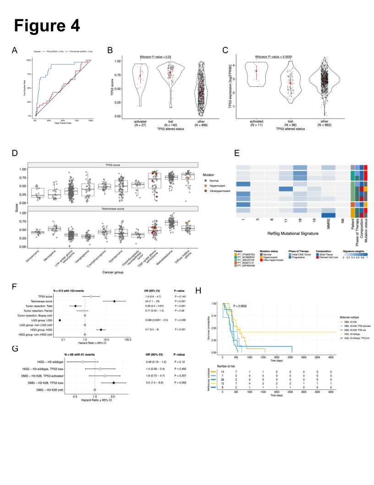
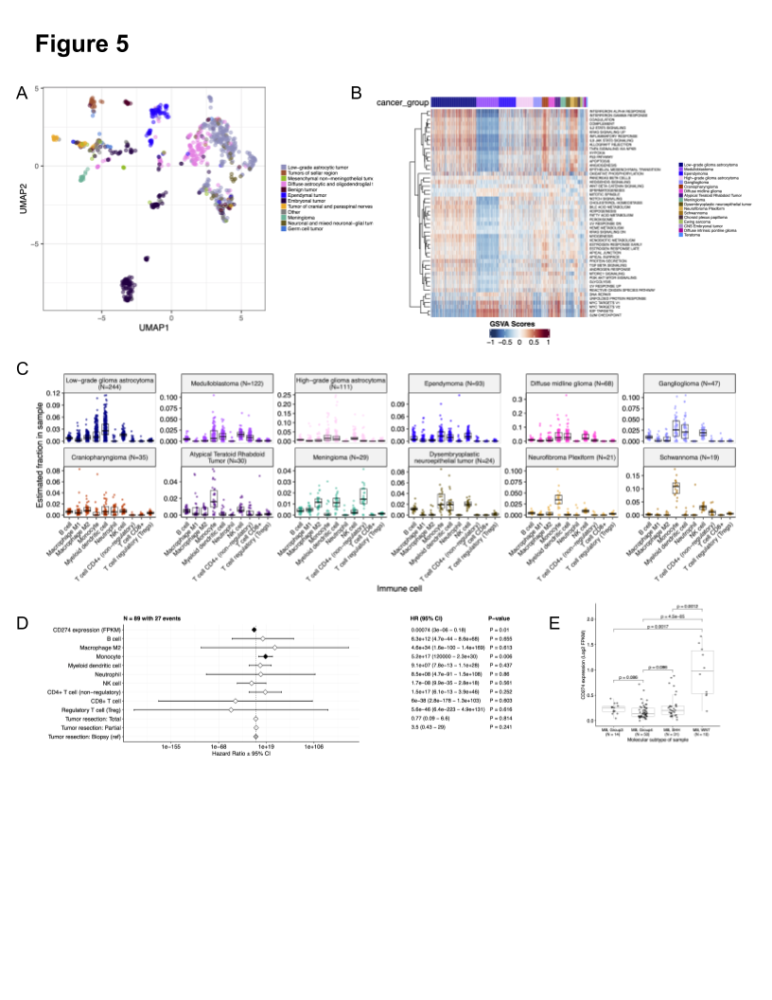
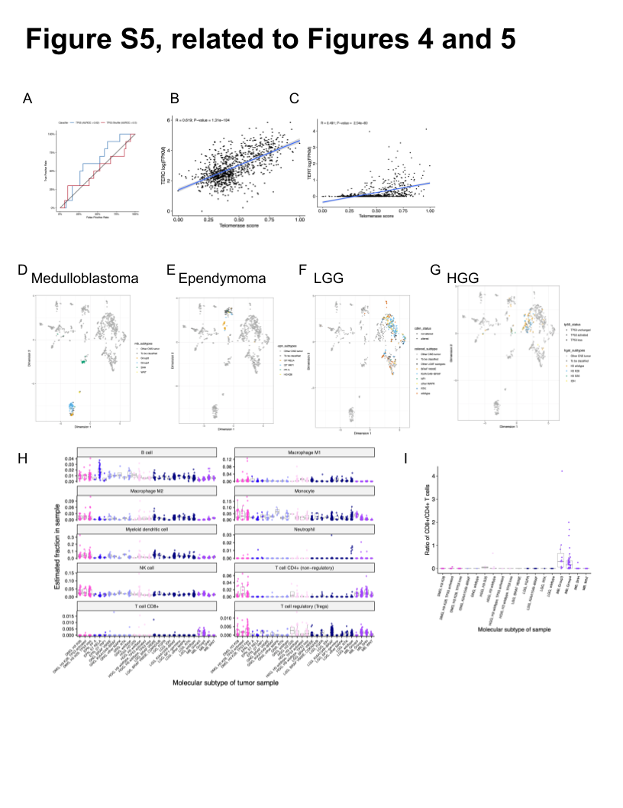

Childhood Cancer Data Lab, Alex’s Lemonade Stand Foundation, Bala Cynwyd, PA, USA
· Funded by Alex’s Lemonade Stand Foundation Childhood Cancer Data Lab (CCDL)
Childhood Cancer Data Lab, Alex’s Lemonade Stand Foundation, Bala Cynwyd, PA, USA
· Funded by Alex’s Lemonade Stand Foundation Childhood Cancer Data Lab (CCDL)
Childhood Cancer Data Lab, Alex’s Lemonade Stand Foundation, Bala Cynwyd, PA, USA
· Funded by Alex’s Lemonade Stand Foundation Childhood Cancer Data Lab (CCDL)
Center for Data-Driven Discovery, Children’s Hospital of Philadelphia; Division of Neurosurgery, Children’s Hospital of Philadelphia; Department of Bioinformatics and Health Informatics, Children’s Hospital of Philadelphia
Center for Data-Driven Discovery, Children’s Hospital of Philadelphia; Department of Bioinformatics and Health Informatics, Children’s Hospital of Philadelphia
Childhood Cancer Data Lab, Alex’s Lemonade Stand Foundation, Bala Cynwyd, PA, USA☯; Rowan University, Glassboro, NJ, USA
· Funded by Alex’s Lemonade Stand Foundation Childhood Cancer Data Lab (CCDL)
☯Current affiliation
Cell and Molecular Biology Graduate Group, Perelman School of Medicine at the University of Pennsylvania; Division of Oncology, Children’s Hospital of Philadelphia
Center for Data-Driven Discovery, Children’s Hospital of Philadelphia; Department of Bioinformatics and Health Informatics, Children’s Hospital of Philadelphia
Center for Data-Driven Discovery, Children’s Hospital of Philadelphia; Division of Neurosurgery, Children’s Hospital of Philadelphia
· Funded by NIH U2C HL138346-03; NCI/NIH Contract No. 75N91019D00024, Task Order No. 75N91020F00003; Australian Government, Department of Education
Department of Pathology and Laboratory Medicine, Children’s Hospital of Philadelphia; Department of Pathology and Laboratory Medicine, University of Pennsylvania Perelman School of Medicine
Department of Pathology and Laboratory Medicine, Children’s Hospital of Philadelphia; Department of Pathology and Laboratory Medicine, University of Pennsylvania Perelman School of Medicine
Laura Scolaro
Division of Oncology, Children’s Hospital of Philadelphia
Department of Oncology, Ann & Robert H. Lurie Children’s Hospital of Chicago; Department of Pediatrics, Northwestern University Feinberg School of Medicine
Department of Systems Pharmacology and Translational Therapeutics, University of Pennsylvania; Childhood Cancer Data Lab, Alex’s Lemonade Stand Foundation, Bala Cynwyd, PA, USA
· Funded by Alex’s Lemonade Stand Foundation GR-000002471; National Institutes of Health K12GM081259
Center for Data-Driven Discovery, Children’s Hospital of Philadelphia; Division of Neurosurgery, Children’s Hospital of Philadelphia
· Funded by Alex’s Lemonade Stand Foundation (Catalyst); Children’s Hospital of Philadelphia Division of Neurosurgery
Center for Data-Driven Discovery, Children’s Hospital of Philadelphia; Division of Neurosurgery, Children’s Hospital of Philadelphia
· Funded by Alex’s Lemonade Stand Foundation (Catalyst); Children’s Brain Tumor Network; NIH 3P30 CA016520-44S5, U2C HL138346-03, U24 CA220457-03; NCI/NIH Contract No. 75N91019D00024, Task Order No. 75N91020F00003; Children’s Hospital of Philadelphia Division of Neurosurgery
Department of Systems Pharmacology and Translational Therapeutics, Perelman School of Medicine, University of Pennsylvania, Philadelphia, PA, USA; Childhood Cancer Data Lab, Alex’s Lemonade Stand Foundation, Bala Cynwyd, PA, USA; Center for Health AI, University of Colorado School of Medicine, Aurora, CO, USA; Department of Biochemistry and Molecular Genetics, University of Colorado School of Medicine, Aurora, CO, USA
· Funded by Alex’s Lemonade Stand Foundation Childhood Cancer Data Lab (CCDL)
Center for Data-Driven Discovery, Children’s Hospital of Philadelphia; Division of Neurosurgery, Children’s Hospital of Philadelphia; Department of Bioinformatics and Health Informatics, Children’s Hospital of Philadelphia
· Funded by Alex’s Lemonade Stand Foundation (Young Investigator, Catalyst); NCI/NIH Contract No. 75N91019D00024, Task Order No. 75N91020F00003
Childhood Cancer Data Lab, Alex’s Lemonade Stand Foundation, Bala Cynwyd, PA, USA
· Funded by Alex’s Lemonade Stand Foundation Childhood Cancer Data Lab (CCDL)
pediatric brain tumors, somatic variation, open science, classification
Introduction
Pediatric brain and spinal cord tumors are the second most common tumors in children after leukemia, yet they represent the leading disease-related cause of death in children [1].
Five-year survival rates vary widely across different histologic and molecular classifications of brain tumors.
For example, most high-grade and embryonal tumors carry a universally fatal prognosis while children with pilocytic astrocytoma have an estimated 10-year survival rate of 92% [2].
Despite their relative rarity, the years of potential life lost due to brain tumors in 2009 was estimated at 47,631 years for children and adolescents aged 0-19 in the United States [3].
The low survival rates for some tumors are clearly multifactorial but can be explained in part by our lack of understanding of the ever-evolving array of brain tumor molecular subtypes, difficulty drugging these entities, and the shortage of drugs specifically labeled for pediatric malignancies.
Historically, some of the most fatal, inoperable brain tumors, such as diffuse midline gliomas, were not routinely biopsied due to perceived risks of biopsy and the paucity of therapeutic options that would require tissue.
Limited access to tissue to develop patient-derived cell line and mouse models has been a barrier to research.
Furthermore, the incidence of any single molecular tumor entity is relatively low due to the rarity of pediatric tumors in general.
Together, these factors have hindered research progress and have led to multiple national and international center and consortia efforts to collaboratively share specimens and data to accelerate breakthroughs and clinical translation.
There has been significant progress in recent years to elucidate the landscape of somatic variation responsible for pediatric brain tumor formation and progression, however, translation of therapeutic agents to phase II or III clinical trials and subsequent FDA approval has been slow.
Within the last 20 years, the FDA has approved only five drugs for the treatment of pediatric brain tumors: mTOR inhibitor, everolimus, for subependymal giant cell astrocytoma; anti-PD-1 immunotherapy, pembrolizumab, for microsatellite instability–high or mismatch repair–deficient tumors; NTRK inhibitors larotrectinib and entrectinib for tumors with an NTRK 1/2/3 gene fusions; MEK1/2 inhibitor, selumetinib, for neurofibromatosis type 1 (NF1) and symptomatic, inoperable plexiform neurofibromas.
This is, in part, due to pharmaceutical company priorities and/or concerns regarding toxicity that have resulted in an inability to obtain drugs for pediatric clinical trials, ultimately delaying access to new agents.
An amendment to the Pediatric Research Equity Act called the Research to Accelerate Cures and Equity (RACE) for Children Act mandates that as of August 18, 2020 all new adult oncology drugs also be tested in children when the molecular targets are relevant to a particular childhood cancer.
Here, we present a comprehensive, collaborative, open genomic analysis of 943 patient tumors from 59 distinct brain tumor histologies which can be used to support the RACE Act and accelerate rational clinical trial design.
Results
Crowd-sourced Somatic Analysis to create an Open Pediatric Brain Tumor Atlas
We previously performed whole genome sequencing (WGS), whole exome sequencing (WXS), and RNA sequencing (RNA-Seq) on matched tumor and normal tissues as well as selected cell lines from 943 patient tumors from the Pediatric Brain Tumor Atlas (PBTA) [4], consisting of samples from the Children’s Brain Tumor Network (CBTN) and the PNOC003 DMG clinical trial [5] of the Pacific Pediatric Neuro-Oncology Symposium (PNOC) (Figure 1A).
We then harnessed the benchmarking efforts of the Kids First Data Resource Center to develop a robust and reproducible data analysis workflow within the CAVATICA platform to perform the following primary somatic analyses: variant calling of single nucleotide variants (SNVs), copy number variants (CNVs), structural variants (SVs), and fusions (Figure S1) - red boxes and STAR Methods).
We maintained a data release folder on Amazon S3 containing merged files for each analysis, downloadable from the GitHub repository or the open-access CAVATICA project (See Data and code availability section).
As new analytical products (e.g., tumor mutation burden calculations) that we expected to be used across multiple analyses were produced, or issues with the data were identified, new releases were made available in a versioned manner.
A key innovative feature of this project was the open contribution model used for both analyses (i.e., analytical code) and scientific manuscript writing.
We created a public Github analysis repository (https://github.com/AlexsLemonade/OpenPBTA-analysis) to hold all code associated with analyses downstream of the Kids First Data Resource Center workflows and a GitHub manuscript repository (https://github.com/AlexsLemonade/OpenPBTA-manuscript) with ManuBot [6] integration to enable real-time manuscript creation using Markdown within GitHub.
Additions to the manuscript often started with proposing a specific analysis in the analysis repository (for example, immune cell deconvolution of bulk RNA-Seq data).
First, a potential contributor proposed an analysis by filing an issue on the GitHub analysis repository.
Next, organizers for the project, or other contributors with expertise, had the opportunity to comment on the proposal (Figure 1C).
The contributor then forked the analysis repository (or make a copy for the purpose of adding code changes) and added their proposed analysis to their fork.
They then filed a pull request on GitHub, where they requested to add their proposed changes to the main repository.
All pull requests to the analysis repository underwent peer review by organizers and/or other contributors.
Analytical code reviews conducted by peer reviewers checked for analysis accuracy (Figure 1C-D) and maintainability as well as readability of code and documentation.
The collaborative nature of the project required additional steps beyond peer review of analytical code (Figure 1D).
Specifically, since multiple contributors were working on the code base and months would sometimes pass between updates to specific analysis modules, it was important to maintain a consistent software development environment to ensure that code could be revised.
We leveraged Docker® and the Rocker project [7] to create a monolithic image that contained all dependencies necessary for analyses in the analysis repository.
To ensure that the image would build and that code would execute over time, we used the continuous integration (CI) service CircleCI® to run analytical code on a small subset of data for testing, which allowed us to detect any sensitivity to changes in the underlying data prior to code review (Figure 1D).
We followed a similar process in our Manubot-powered [6] manuscript repository for additions to the manuscript (Figure 1C).
Contributors forked the manuscript repository, added proposed content to their branch, and filed pull requests to the main manuscript repository with their changes.
Similarly, pull requests underwent a peer review process for clarity and correctness, agreement with interpretation, and spell checking via Manubot (Figure 1C).
Figure 1:Overview of the OpenPBTA Project. A, The Children’s Brain Tumor Network and the Pacific Pediatric Neuro-Oncology Consortium collected tumor samples from 943 patients. To date, 38 cell lines were created from tumor tissue, and over 2000 specimens were sequenced (N = 1035 RNA-Seq, N = 940 WGS, and N = 32 WXS or Targeted panel). Data was harmonized by the Kids First Data Resource Center using an Amazon S3 framework within CAVATICA. B, Stacked bar plot summary of the number of biospecimens per phase of therapy per broad histology (GNG = ganglioglioma, LGG = low-grade glioma, DIPG = diffuse intrinsic pontine glioma, DMG = diffuse midline glioma, EPN = ependymoma, HGG = high-grade glioma, ATRT = atypical teratoid rhabdoid tumor, CNS-ET = CNS embryonal tumor, MB = medulloblastoma, PNF = plexiform neurofibroma, DNET = dysembryoplastic neuroepithelial tumor, CRANIO = craniopharyngioma, EWS = Ewing sarcoma, CPP = choroid plexus papilloma). C, Overview of the open analysis and manuscript contribution model. In the analysis GitHub repository, a contributor would propose an analysis that other participants can comment on. Contributors would then implement the analysis and file a request to add their changes to the analysis repository (“pull request”). Pull requests underwent review for scientific rigor and correctness of implementation. Pull requests were additionally checked to ensure that all software dependencies were included and the code was not sensitive to underlying data changes using container and continuous integration technologies. Finally, a contributor would file a pull request documenting their methods and results to the Manubot-powered manuscript repository. Pull requests in the manuscript repository were also subject to review. D, A potential path for an analytical pull request. Arrows indicate revisions to a pull request. Prior to review, a pull request was tested for dependency installation and whether or not the code would execute. Pull requests also required approval by organizers and/or other contributors, who checked for scientific correctness. Panel A created with BioRender.com.
Molecular Subtyping of OpenPBTA CNS Tumors
Over the past two decades, together with the World Health Organization (WHO), experts in neurooncology have iteratively redefined the classifications of central nervous system (CNS) tumors [8,9].
More recently, in 2016 and 2021 [10,11], molecular subtypes have been integrated into these entities.
The Children’s Brain Tumor Tissue Consortium (CBTTC), currently the Children’s Brain Tumor Network (CBTN), opened its protocol for brain tumor and matched normal sample collection in 2011 and as such, the majority of the samples within the OpenPBTA dataset lack molecular subtype annotation.
In the absence of methylation arrays commonly used for tumor classification, we coupled key genomic features of tumor entities described by the WHO in 2016 and low-grade glioma (LGG) subtypes described by Ryall and colleagues [12] with clinician and pathologist review to subtype 64% (1,281/2,007) of tumor biospecimens with high confidence (Table S1).
Importantly, this collaborative molecular subtyping process allowed us to identify data entry errors (e.g., an ETMR entered as a medulloblastoma) and mis-identified specimens (e.g., Ewing sarcoma sample labeled as a craniopharyngioma), update diagnoses using modern terms (e.g., primitive neuro-ectodermal tumor [PNET] diagnoses), and discover rarer tumor entities within the OpenPBTA (e.g., H3-mutant ependymoma, meningioma with YAP1::FAM118B fusion).
Table 1 lists the subtypes we defined within the OpenPBTA, comprising of LGATs (N = 569), high-grade gliomas (N = 314), embryonal tumors (N = 229), ependymomas (N = 65), tumors of sellar region (N = 51), mesenchymal non-meningothelial tumors (N = 21), glialneuronal tumors (N = 20), and chordomas (N = 12).
or detailed methods, see STAR Methods and Figure S1.
Broad histology
OpenPBTA molecular subtype
n
Chordoma
CHDM, conventional
4
Chordoma
CHDM, poorly differentiated
8
Diffuse astrocytic and oligodendroglial tumor
DMG, H3 K28
54
Diffuse astrocytic and oligodendroglial tumor
DMG, H3 K28, TP53 activated
26
Diffuse astrocytic and oligodendroglial tumor
DMG, H3 K28, TP53 loss
91
Diffuse astrocytic and oligodendroglial tumor
HGG, H3 G35
7
Diffuse astrocytic and oligodendroglial tumor
HGG, H3 G35, TP53 loss
2
Diffuse astrocytic and oligodendroglial tumor
HGG, H3 wildtype
74
Diffuse astrocytic and oligodendroglial tumor
HGG, H3 wildtype, TP53 activated
10
Diffuse astrocytic and oligodendroglial tumor
HGG, H3 wildtype, TP53 loss
45
Diffuse astrocytic and oligodendroglial tumor
HGG, IDH, TP53 activated
3
Diffuse astrocytic and oligodendroglial tumor
HGG, IDH, TP53 loss
2
Embryonal tumor
CNS Embryonal, NOS
24
Embryonal tumor
CNS HGNET-MN1
1
Embryonal tumor
CNS NB-FOXR2
5
Embryonal tumor
ETMR, C19MC-altered
8
Embryonal tumor
ETMR, NOS
1
Embryonal tumor
MB, Group3
24
Embryonal tumor
MB, Group4
91
Embryonal tumor
MB, SHH
55
Embryonal tumor
MB, WNT
20
Ependymal tumor
EPN, H3 K28
2
Ependymal tumor
EPN, PF A
6
Ependymal tumor
EPN, ST RELA
51
Ependymal tumor
EPN, ST YAP1
6
Low-grade astrocytic tumor
GNG, BRAF V600E
25
Low-grade astrocytic tumor
GNG, BRAF V600E, CDKN2A/B
2
Low-grade astrocytic tumor
GNG, FGFR
2
Low-grade astrocytic tumor
GNG, H3
2
Low-grade astrocytic tumor
GNG, IDH
4
Low-grade astrocytic tumor
GNG, KIAA1549-BRAF
10
Low-grade astrocytic tumor
GNG, MYB/MYBL1
2
Low-grade astrocytic tumor
GNG, NF1-germline
2
Low-grade astrocytic tumor
GNG, NF1-somatic, BRAF V600E
1
Low-grade astrocytic tumor
GNG, other MAPK
7
Low-grade astrocytic tumor
GNG, other MAPK, IDH
2
Low-grade astrocytic tumor
GNG, RTK
6
Low-grade astrocytic tumor
GNG, wildtype
28
Low-grade astrocytic tumor
LGG, BRAF V600E
53
Low-grade astrocytic tumor
LGG, BRAF V600E, CDKN2A/B
10
Low-grade astrocytic tumor
LGG, FGFR
16
Low-grade astrocytic tumor
LGG, IDH
6
Low-grade astrocytic tumor
LGG, KIAA1549-BRAF
222
Low-grade astrocytic tumor
LGG, KIAA1549-BRAF, other MAPK
2
Low-grade astrocytic tumor
LGG, MYB/MYBL1
4
Low-grade astrocytic tumor
LGG, NF1-germline
12
Low-grade astrocytic tumor
LGG, NF1-germline, CDKN2A/B
2
Low-grade astrocytic tumor
LGG, NF1-germline, FGFR
4
Low-grade astrocytic tumor
LGG, NF1-somatic
4
Low-grade astrocytic tumor
LGG, NF1-somatic, FGFR
2
Low-grade astrocytic tumor
LGG, NF1-somatic, NF1-germline, CDKN2A/B
2
Low-grade astrocytic tumor
LGG, other MAPK
23
Low-grade astrocytic tumor
LGG, RTK
22
Low-grade astrocytic tumor
LGG, RTK, CDKN2A/B
2
Low-grade astrocytic tumor
LGG, wildtype
84
Low-grade astrocytic tumor
SEGA, wildtype
6
Mesenchymal non-meningothelial tumor
EWS
21
Neuronal and mixed neuronal-glial tumor
CNC
4
Neuronal and mixed neuronal-glial tumor
EVN
2
Neuronal and mixed neuronal-glial tumor
GNT, BRAF V600E
2
Neuronal and mixed neuronal-glial tumor
GNT, KIAA1549-BRAF
4
Neuronal and mixed neuronal-glial tumor
GNT, other MAPK
2
Neuronal and mixed neuronal-glial tumor
GNT, other MAPK, FGFR
2
Neuronal and mixed neuronal-glial tumor
GNT, RTK
4
Tumors of sellar region
CRANIO, ADAM
51
Total
1281
Table 1: Molecular subtypes determined across OpenPBTA samples.
Somatic Mutational Landscape of Pediatric Brain Tumors
We performed a comprehensive genomic analysis of somatic SNVs, CNVs, SVs, and fusions across 1,969 tumors (N = 1,019 RNA-Seq, N = 1,719 WGS, N = 64 WXS/Panel) and 38 cell lines (N = 16 RNA-Seq, N = 22 WGS) from 943 patients.
Following SNV consensus calling (Figure S1 and Figure S2A-G), we observed lower expected tumor mutation burden (TMB) Figure S2H in pediatric tumors compared to adult brain tumors from The Cancer Genome Atlas (TCGA), Figure S2I, with hypermutant (> 10 Mut/Mb) and ultra-hypermutant (> 100 Mut/Mb) tumors [13] only found within HGGs.
Low-grade astrocytic tumors
Figure 2A depicts an oncoprint of driver genes for 227 primary low-grade astrocytic tumors. As expected, the majority (62%, 140/227) of these tumors harbor a somatic alteration in BRAF, with canonical BRAF::KIAA1549 fusions as the major oncogenic driver.
We observed additional mutations in FGFR1 (2%), PIK3CA (2%), KRAS (2%), TP53 (1%), and ATRX (1%) and fusions in NTRK2 (2%), RAF1 (2%), MYB (1%), QKI (1%), ROS1 (1%), and FGFR2 (1%), concordant with previous studies reporting the near universal upregulation of the RAS/MAPK pathway in these tumors resulting from activating mutations and/or oncogenic fusions [12,14].
Indeed, we observed significant upregulation (ANOVA p < 0.01) of the KRAS signaling pathway in LGATs (Figure 5B).
Embryonal tumors
Figure 2B shows the mutational landscape for 128 primary embryonal tumors.
The majority (N = 95) are medulloblastomas and span the spectrum of molecular subtypes: WNT, SHH, Group3, and Group 4 (see Molecular Subtyping of CNS Tumors), with their canonical mutations.
We detected canonical SMARCB1/SMARCA4 deletions or inactivating mutations in atypical teratoid rhabdoid tumors (ATRTs) and C19MC amplification in the embryonal tumors with multilayer rosettes (ETMRs) [15,16,17,18].
Diffuse astrocytic and oligodendroglial tumors
In Figure 2C, we show genomic alterations in diffuse midline gliomas (DMGs, N = 34) and non-midline high-grade gliomas (N = 26) biopsied at diagnosis.
The single oligodendroglioma sample in the OpenPBTA does not contain mutations in the genes shown and is therefore not present in this oncoprint.
Across HGGs, we found TP53 (57%, 35/61) and H3F3A (52%, 32/61) to be the most mutated and co-occurring genes (Figure 2A), followed by frequent mutations in ATRX (30% 18/61).
We found recurrent amplifications and fusions in EGFR, MET, PDGFRA, and KIT, highlighting that these tumors utilize multiple oncogenic mechanisms to activate tyrosine kinases, as has been previously reported [5,19,20].
Gene set enrichment analysis showed upregulation (ANOVA p < 0.01) of DNA repair, G2M checkpoint, and MYC pathways as well as downregulation of the TP53 pathway (Figure 5B).
The two tumors with ultra-high tumor mutation burden (TMB) (> 100 Mutations/Mb) were from patients with known mismatch repair deficiency syndrome [4].
Other CNS tumors
Figure 2D depicts an oncoprint for the remaining primary CNS tumors (N = 195).
We observed 25% (15/60) of ependymoma tumors to be C11orf95::RELA (now, ZFTA::RELA) fusion positive ependymomas and 70% (21/30) of craniopharyngiomas to be driven by mutations in CTNNB1.
Multiple histologies contained somatic mutations or fusions in NF2: 41% (7/17) of meningiomas, 5% (3/60) of ependymomas, and 27% (3/11) schwannomas.
Rare fusions in ERBB4, YAP1, KRAS, and MAML2 were observed in 10% (6/60) of ependymoma tumors.
DNETs harbored alterations in MAPK/PI3K pathway genes as previously reported [21], including FGFR1 (21%, 4/19), PDGFRA (10%, 2/19), and BRAF (5%, 1/19).
Frequent mutations in rarer brain tumor histologies (N < 5) are depicted in Figure S3A.
Figure 2:Figure 2. Mutational landscape of PBTA tumors. Shown are frequencies of canonical somatic gene mutations, CNVs, fusions, and TMB (top bar plot) for the top 20 genes mutated across primary tumors within the OpenPBTA dataset. A, Low-grade astrocytic tumors (N = 227): low-grade glioma astrocytoma (N = 187), ganglioglioma (N = 35), subependymal giant cell astrocytoma (N = 2), diffuse fibrillary astrocytoma (N = 1), pilocytic astrocytoma (N = 1), and pleomorphic xanthoastrocytoma (N = 1); B, Embryonal tumors (N = 128): medulloblastomas (N = 95), atypical teratoid rhabdoid tumors (N = 24), embryonal tumors with multilayer rosettes (N = 2), other CNS embryonal tumors (N = 5), ganglioneuroblastoma (N = 1), and CNS neuroblastoma (N = 1); C, Diffuse astrocytic and oligodendroglial tumors (N = 61): diffuse midline gliomas (N = 34) and non-midline high-grade gliomas (N = 26), oligodendroglioma (N = 1); D, Other CNS tumors (N = 195): ependymomas (N = 60), dysembryoplastic neuroepithelial tumors (N = 19), meningiomas (N = 17), schwannoma (N = 11), neurofibroma plexiform (N = 7). Other CNS tumors with N < 5 are displayed in Figure S3A. Patient sex (germline_sex_estimate) and tumor histology (cancer_group) are displayed as annotations at the bottom of each plot. Only samples with mutations in the listed genes are shown. Multiple CNVs are denoted as a complex event.
Mutational co-occurrence, CNV and signatures highlight key oncogenic drivers
The top 50 mutated genes in primary tumors are shown Figure 3 by tumor type (A, bar plots), with co-occurrence scores illustrated in the heatmap (B).
We observed TP53 to be the most frequently mutated gene across OpenPBTA tumors (8.4%, 56/666), significantly co-occurring with H3F3A (OR = 32, 95% CI: 15.3 - 66.7, q = 8.46e-17), ATRX (OR = 20, 95% CI: 8.4 - 47.7, q = 4.43e-8), NF1 (OR = 8.62, 95% CI: 3.7 - 20.2, q = 5.45e-5), and EGFR (OR = 18.2, 95% CI: 5 - 66.5, q = 1.6e-4).
Other canonical cancer driver genes were frequently mutated: BRAF, H3F3A, CTNNB1, NF1, ATRX, FGFR1, and PIK3CA.
Although LGG and embryonal tumors make up the majority of tumor types within the OpenPBTA, most of the significant gene interactions stem from HGGs (N = 847/872).
At the broad histology level, CTNNB1 significantly co-occurs with TP53 (OR = 42.9, 95% CI: 7 - 261.4, q = 1.63e-3) and DDX3X (OR = 21.1, 95% CI: 4.6 - 96.3, q = 4.46e-3) in embryonal tumors, FGFR1 and PIK3CA significantly co-occur in LGGs (OR = 76.1, 95% CI: 9.85 - 588.1, q = 3.26e-3), consistent with previous findings [22; 10.1186/s40478-020-01027-z].
TP53 and PPM1D mutations have been shown to be mutually exclusive in HGGs, and our data recapitulates that trend (52/54 or 96.3% of tumors have a mutation in either gene, OR = 0.188, 95% CI: 0.04 - 0.94, p = 4.13e-2, q = 5.87e-2) [23].
We summarized broad copy number and structural variation and observed that HGGs and DMGs, followed by medulloblastomas, have the most unstable genomes (Figure S3A).
By contrast, craniopharyngiomas and schwannomas generally lack somatic copy number variation.
These patterns of copy number variation largely align with estimates of tumor mutational burden (Figure S2H).
The number of SV and CNV breakpoints were significantly correlated across tumors (p = 1.08e-37) (Figure 3C) and as expected, the number of chromothripsis regions called increases as breakpoint density increases (Figure S3B-C).
Chromothripsis events were observed in 41% (N = 19/46) of non-midline high-grade gliomas and 28.2% (N = 11/39) of DMGs (Figure 3D).
We also found evidence of chromothripsis in over 15% of embryonal tumors, ependymomas, meningiomas, germinomas, glial-neuronal tumors, chordomas, metastatic secondary tumors, and sarcomas, highlighting the genomic instability and complexity of pediatric brain tumors.
We next assessed the contributions of eight previously identified adult CNS-specific mutational signatures [24] (RefSig) across cancer groups Figure 3E and samples Figure S4A.
Stage 0 and/or 1 tumors characterized by low TMBs Figure S2G such as LGGs, gangliogliomas, craniopharyngiomas, DNETs, and schwannomas are expectedly dominated by Signature 1, which results from the normal process of spontaneous deamination of 5-methylcytosine.
Signature N6 is CNS-specific signature which we observe nearly universally across samples.
Drivers of Signature 18, TP53, APC, NOTCH1 (found at https://signal.mutationalsignatures.com/explore/referenceCancerSignature/31/drivers), are also canonical drivers of medulloblastoma, and indeed, we observe Signature 18 as the most common signature in medulloblastoma tumors.
Signatures 3, 8, 18, and MMR2 are prevalent in HGGs, including DMGs.
Finally, we observe that the weight of Signature 1 is higher at diagnosis (pre-treatment) and is almost always lower in tumors at later phases of therapy (progression, recurrence, post-mortem, secondary malignancy) Figure S4B.
This trend may be the result of therapy-induced mutations which produce additional signatures (e.g., temozolomide treatment drives Signature 11), subclonal expansion, and/or acquisition of additional driver mutations during tumor progression, leading to higher overall TMBs and additional signatures.
Figure 3:Figure 3. Mutational co-occurrence and signatures highlight key oncogenic drivers. A, Bar plot of occurrence and co-occurrence of nonsynonymous mutations for the 50 most commonly mutated genes across all tumor types (annotated from cancer_group if N >= 10 or Other if N < 10); B, Co-occurrence and mutual exclusivity of nonsynonymous mutations between genes; The co-occurrence score is defined as \(I(-\log_{10}(P))\) where \(P\) is defined by Fisher’s exact test and \(I\) is 1 when mutations co-occur more often than expected and -1 when exclusivity is more common; C, The number of SV breaks significantly correlate with CNV breaks (Adjusted R = 0.436, p = 1.08e-37). D, Chromothripsis frequency across pediatric brain tumors shown by cancer_group with N >= 3. E, Sina plots of RefSig signature weights for signatures 1, 3, 8, 11, 18, 19, N6, MMR2, and Other across cancer groups. Box plot lines represent the first quartile, median, and third quartile.
Transcriptomic Landscape of Pediatric Brain Tumors
Prediction of TP53 oncogenicity and telomerase activity
To understand the TP53 phenotype in each tumor, we ran a classifier previously trained on TCGA [25] to infer TP53 inactivation status.
Using high-confidence SNVs, CNVs, SVs, and fusions in TP53 as true positive alterations, we achieved a high accuracy (AUROC = 0.85) for rRNA-depleted, stranded samples compared to randomly shuffled TP53 scores (Figure 4A).
The classifier did not perform well on the poly-A samples (Figure S5A), potentially due to the low number of TP53 altered (N = 29) and/or total poly-A samples in our dataset (N = 58) rather than library type, as a previous study demonstrated high accuracy of this classifier on another poly-A dataset [26].
We annotated TP53 alterations as “activated” if samples harbored one of p.R273C or p.R248W mutations [27], “loss” if the patient had a Li Fraumeni Syndrome (LFS) predisposition diagnosis, tumor harbors a known hotspot mutation, or contains two hits (e.g.: SNV and CNV), suggesting both alleles are affected.
If the TP53 mutation did not reside within the DNA-binding domain or if an alteration was not detected in TP53, we annotated the tumor as “other”.
While we expected that samples annotated as “loss” had higher TP53 scores than samples annotated as “other”, we observed that those annotated as “activated” had similar TP53 scores to those annotated as “loss” (Figure 4B, Wilcoxon p = 0.23), suggesting that the classifier detects an oncogenic, or altered, TP53 phenotype (scores > 0.5) rather than solely TP53 inactivation, as interpreted previously [25].
Moreover, tumors with “activating” TP53 mutations had evidence of higher TP53 expression than those with TP53 “loss” mutations (Wilcoxon p = 3.5e-3, Figure 4C.
To further validate the classifier’s accuracy, we assessed TP53 scores for patients with LFS, hypothesizing that all of these tumors would have high scores.
Indeed, we observed higher scores in LFS tumors (N = 8) for which we detected high-confidence TP53 somatic alterations (Tables S1 and S3).
Although we were unable to detect canonical somatic TP53 mutations in two LFS patient tumors with low TP53 scores (BS_DEHJF4C7 with a score of 0.09 and BS_ZD5HN296 with a score of 0.28, we confirmed the LFS diagnosis from pathology reports and found each to have a pathogenic germline variant in TP53.
The tumor purity of these two LFS samples was low (16% and 37%), suggesting the classifier requires a certain level of tumor purity to achieve good performance, as we expect TP53 to be intact in normal cells.
Tumors with the highest median TP53 scores were those known to harbor somatic TP53 alterations: DMGs, medulloblastomas, HGGs, DNETs, ependymomas, and craniopharyngiomas (Figure 4D), while gangliogliomas, LGGs, meningiomas, and schwannomas had the lowest scores.
We next used gene expression data to predict telomerase activity using EXpression-based Telomerase ENzymatic activity Detection (EXTEND) [28] as a surrogate measure of malignant potential [28; 10.1093/carcin/bgp268].
As expected, EXTEND scores significantly correlated with TERC (R = 0.619, p < 0.01) and TERT (R = 0.491, p < 0.01) expression (Figure S5B-C).
We found aggressive tumors such as CNS lymphoma, ETMR, ATRT, DMG, and HGG had high EXTEND scores (Figure 4D), while benign lesions such as teratomas, dysplasias, and hemangioblastomas had the lowest scores (Table S3).
This supports previous reports of a more aggressive phenotype in tumors with higher telomerase activity [29;10.1038/labinvest.3700710;10.1007/s12032-016-0736-x;10.1111/j.1750-3639.2010.00372.x].
Hypermutant tumors share mutational signatures and have dysregulated TP53
We further investigated the mutational signature profiles of the hypermutant (N = 2) and ultra-hypermutant (N = 4) HGG tumors and/or derived cell lines from five patients in the OpenPBTA cohort.
The relative contributions of eight RefSig mutational signatures are shown in the heatmap in Figure 4E for all tumors from patients with at least one tumor or cell line having a TMB >= 10 Mut/Mb.
Signature 11, a suggested exposure to temozolomide, was indeed present in tumors with previous exposure to the drug (Table 2).
We found the MMR2 signature in tumors of four patients (PT_0SPKM4S8, PT_3CHB9PK5, PT_JNEV57VK, and PT_VTM2STE3) diagnosed with Lynch syndrome (Table 2), a genetic predisposition syndrome caused by a variant in a mismatch repair gene such as PMS2, MLH1, MSH2, MSH6, or others [30].
Interestingly, the cell line derived from patient PT_VTM2STE3’s tumor at progression was not hypermutated (TMB = 5.74) but shows exposure to only the MMR2 signature, suggesting there was selective pressure to maintain an MMR phenotype in vitro.
From patient PT_JNEV57VK, only one of the two cell lines derived from the progressive tumor was hypermutant (TMB of 35.9 Mut/Mb).
The hypermutated cell line had a strong signature 11, while the non-hypermutated cell line from the same tumor showed a number of lesser exposures (1, 11, 18, 19, MMR2), highlighting the importance of carefully genomically characterizing and selecting models for preclinical studies based on research objectives.
We observed that signature 18, which has been associated with high genomic instability and can lead to a hypermutator phenotype [24], is uniformly represented among hypermutant solid tumors.
Additionally, we found that all of these tumor or cell lines have dysfunctional TP53 (Table 2), consistent with a previous report showing dysregulation of TP53 is a dependency in tumors with high genomic instability [24].
With one exception, hypermutant and ultra-hypermutant tumors had high TP53 scores and telomerase activity Figure 4D.
Interestingly, none of the samples were exposed to signatures 3 (present in homologous recombination deficient tumors), signature 8 (arises from double nucleotide substitutions/unknown etiology), or signature N6 (a universal CNS tumor signature).
The mutual exclusivity of signatures 3 and MMR corroborates a previous report suggesting tumors do not have both deficient homologous repair and mismatch repair [25].
Kids First Participant ID
Kids First Biospecimen ID
CBTN ID
Phase of therapy
Composition
Therapy post-biopsy
Cancer predisposition(s)
TMB
OpenPBTA molecular subtype
PT_0SPKM4S8
BS_VW4XN9Y7
7316-2640
Initial CNS Tumor
Solid Tissue
Temozolomide, CCNU, Radiation
None documented
187.38765454966892
HGG, H3 wildtype, TP53 activated
PT_3CHB9PK5
BS_20TBZG09
7316-515
Initial CNS Tumor
Solid Tissue
Temozolomide, Irinotecan, Bevacizumab, Radiation
NF-1,Other inherited conditions NOS
307.0492167109247
HGG, H3 wildtype, TP53 loss
PT_3CHB9PK5
BS_8AY2GM4G
7316-2085
Progressive
Solid Tissue
Unknown
NF-1, Lynch syndrome, pathogenic MSH6
321.6079467820181
HGG, H3 wildtype, TP53 loss
PT_JNEV57VK
BS_85Q5P8GF
7316-2594
Initial CNS Tumor
Solid Tissue
Temozolomide, Radiation
Lynch syndrome
4.731587273105341
DMG, H3 K28, TP53 loss
PT_JNEV57VK
BS_HM5GFJN8
7316-3058
Progressive
Derived Cell Line
Nivolumab
Lynch Syndrome, pathogenic MSH2
35.89286913681093
DMG, H3 K28, TP53 loss
PT_JNEV57VK
BS_QWM9BPDY
7316-3058
Progressive
Derived Cell Line
Nivolumab
Lynch Syndrome, pathogenic MSH2
7.363357709033756
DMG, H3 K28, TP53 loss
PT_JNEV57VK
BS_P0QJ1QAH
7316-3058
Progressive
Solid Tissue
Nivolumab
Lynch Syndrome, pathogenic MSH2
6.271452953701754
DMG, H3 K28, TP53 activated
PT_S0Q27J13
BS_P3PF53V8
7316-2307
Initial CNS Tumor
Solid Tissue
Temozolomide, Irinotecan, Radiation
None documented
15.482649479451206
HGG, H3 wildtype, TP53 activated
PT_VTM2STE3
BS_ERFMPQN3
7316-2189
Progressive
Derived Cell Line
Unknown
Lynch Syndrome
5.739499354950266
HGG, H3 wildtype, TP53 loss
PT_VTM2STE3
BS_02YBZSBY
7316-2189
Progressive
Solid Tissue
Unknown
Lynch Syndrome
274.48805695576783
HGG, H3 wildtype, TP53 activated
Table 2. Patients with hypermutant tumors.
Next, we asked whether transcriptomic classification of TP53 dysregulation and/or telomerase activity recapitulate the known prognostic influence of these oncogenic biomarkers.
We used an additive model to perform multivariate cox regression on overall survival (STAR Methods), controlling for extent of tumor resection and whether a tumor was low-grade (LGG group) or high-grade (HGG group).
Depicted in the forest plot (Figure 4F), we show an expected significant overall survival benefit if the tumor was fully resected (HR = 0.36, CI = 0.2-0.67, p = 0.001) or if the tumor belongs to the LGG group (HR = 0.068, CI = 0.0091-0.5, p = 0.008).
In contrast, we show an expected significant risk if the tumor belongs to the HGG group (HR = 5.7, CI = 3.5-9.0, p < 0.001).
High telomerase scores were a poor prognostic indicator across brain tumor histologies (HR = 24, CI = 7.1-79, p < 0.001), demonstrating that EXTEND scores calculated from RNA-Seq can be used as a rapid surrogate measure of telomerase activity.
Higher TP53 scores, indicative of dysregulation of the TP53 gene or pathway, while not significant across the entire OpenPBTA cohort, resulted in a significant overall survival risk for both DMGs (HR = 1.77e6, CI = 1.98-1.57e12, p = 0.04) and ependymomas (HR = 1612, CI = 9.1-2.9e5, p = 0.005).
Since we observed the negative prognostic effect of TP53 for HGGs, we assessed the effect of molecular subtypes with and without TP53 dysregulation, as determined by our TP53 classification combined with molecular evidence.
Furthermore, cox regression analysis revealed that DMG H3 K28 tumors with TP53 loss have significantly worse prognosis (HR = 3.2, CI = 1.5-6.6, p = 0.002) than DMG H3 K28 tumors with wildtype TP53Figure 4G), which is visualized by Kaplan-Meier in Figure 4H.
Figure 4:Figure 4. TP53 and telomerase activity A, Receiver Operating Characteristic for TP53 classifier run on FPKM of stranded RNA-Seq samples. B, Violin and box plots of TP53 scores plotted by TP53 alteration type (Nactivated = 27, Nlost = 140, Nother = 999). C, Violin and box plots of TP53 RNA expression plotted by TP53 activation status (Nactivated = 11, Nlost = 96, Nother = 862). D, Box plots of TP53 and telomerase (EXTEND) scores grouped by cancer_group. Mutation status is highlighted in orange (hypermutant) or red (ultra-hypermutant). E, Heatmap of RefSig mutational signatures for patients who have least one tumor or cell line with a TMB >= 10 Mut/Mb. F, Forest plot depicting the prognostic effects of TP53 and telomerase scores on overall survival, controlling for extent of tumor resection, LGG group, and HGG group. G, Forest plot depicting the effect of molecular subtype on overall survival of HGGs. For F and G, hazard ratios (HR) with 95% confidence intervals and p-values are listed. Significant p-values are denoted with black diamonds. Reference groups are denoted by grey diamonds. H, Kaplan-Meier curve of HGG tumors by molecular subtype.
Histologic and oncogenic pathway clustering
UMAP visualization of gene expression variation across brain tumors (Figure 5A) shows the expected clustering of brain tumors by histology.
We observed medulloblastomas cluster by molecular subtype with WNT and SHH in distinct clusters and Groups 3 and 4 showing some overlap (Figure S5D), as expected.
Of note, two samples annotated as the SHH subtype do not cluster with the MB samples and one clusters with Group 3 and 4 samples, suggesting potential subtype misclassification or different underlying biology of these tumors.
Additionally, except for three outliers, C11orf95::RELA (ZFTA::RELA) fusion positive ependymomas fall within distinct clusters (Figure S5E).
BRAF-driven low-grade gliomas (Figure S5F) were present in three separate clusters, suggesting that there might be additional shared biology within each cluster.
Histone H3 G35-mutant HGGs generally clustered together and away from K28-mutant tumors (Figure S5G).
Interestingly, although H3 K28-mutant tumors have different biological drivers than H3 wildtype tumors, they did not form distinct clusters.
This suggests they may be driven by common transcriptional programs, have other much stronger biological drivers such as their known distinct epigenetic drivers, or our sample size is too small to detect transcriptional differences.
We next performed gene set variant analysis (GSVA) for Hallmark cancer gene sets to demonstrate activation of underlying oncogenic pathways (Figure 5B) and characterized the immune cell landscape across OpenPBTA tumors by running quanTIseq on RNA-Seq data (Figure 5C and Figure S5H).
For example, HGG, DMG, MB, and ATRT tumors are known to upregulate MYC[31] which in turn activates E2F and S phase [???].
Indeed, we detected significant (Bonferroni p < 0.05) upregulation of MYC and E2F targets, as well as G2M (cell cycle phase following S phase) in both embryonal and diffuse astrocytic and oligodendroglial tumors compared to several other broad histologies.
In contrast, low-grade astrocytic tumors show significant downregulation (Bonferroni p < 0.05) of these pathways.
Schwannomas and neurofibromas, which have a documented inflammatory immune microenvironment of T and B lymphocytes, as well as tumor-associated macrophages (TAMs) driven by upregulation of cytokines such as IFN\(\gamma\), IL-1, and IL-6, and TNF\(\alpha\)[32].
This was recapitulated in GSVA hallmark pathways (Bonferroni p < 0.05) (Figure 5B) and immune cell deconvolution, showing that monocytes make up the majority of immune cells in these tumors (Figure 5C).
We also observe significant up-regulation of pro-inflammatory cytokines IFN\(\alpha\) and IFN\(\gamma\) in LGG and craniopharyngiomas compared to medulloblastoma and ependymoma tumors (Bonferroni p < 0.05), which show significant down-regulation of these cytokines (Figure 5B).
These data support previous proteogenomic findings of lower immune infiltration in aggressive medulloblastomas and ependymomas and higher immune infiltration in BRAF-driven LGG and craniopharyngiomas [33].
The anatomical location of craniopharyngiomas, and critical surrounding structures, makes them difficult to fully resect, thus additional treatment strategies are often required.
While interferon alpha immunotherapy is a standard of care, additional immune vulnerabilities, such as checkpoint blockade, have recently been proposed [34; 10.3389/fneur.2021.704130].
Complete GSVA results can be found within the gene-set-enrichment-analysis in the OpenPBTA analysis repository.
Although CD8+ T-cell infiltration across all cancer groups is quite low (Figure 5C and Figure S5H), we observed some signal in specific cancer molecular subtypes (Groups 3 and 4 medulloblastoma) as well as outlier tumors (BRAF-driven LGG, BRAF-driven and wildtype ganglioglioma, H3 wildtype HGG).
Surprisingly, the classically immunologically cold HGG and DMG tumors [35; 10.1093/brain/awab155] contained higher overall fractions of immune cells, with monocytes, dendritic cells, and NK cells being the most prevalent (Figure 5C).
Thus, we suspect that quanTIseq might actually be capturing microglia within these immune cell fractions.
While we did not detect notable prognostic effects of immune cell infiltration in HGG or DMG, we did find that high levels of macrophage M1 and monocytes were associated with poorer overall survival (monocyte HR = 5.2e17, CI = 1.2e5-2.3e30, p = 0.006) in medulloblastoma tumors (Figure 5D).
Medulloblastomas typically have low expression of CD274 (PD-L1) [36] a result we reproduced here (Figure 5E).
However, we also found that higher expression of CD274 is significantly associated with better overall prognosis (HR = 0.00074, CI = 3.0e-6 to 0.18, p = 0.01).
Consistent with a previous study, we found higher expression of CD274 in the WNT subgroup, which has the best prognosis of all medulloblastoma subgroups [37] (Figure 5E).
Finally, we asked whether any molecular subtypes might show an immunologically hot phenotype, as roughly defined by a greater proportion of CD8+ to CD4+ T cells and while we do see the highest ratios in Group 3 and Group 4 medulloblastomas (Figure 5I), very few tumors had ratios > 1, highlighting an urgent need to identify novel therapeutics for these immunologically cold pediatric brain tumors with poor prognosis.
Figure 5:Figure 5. Transcriptomic and Immune Landscape A, First two dimensions from UMAP of sample transcriptome data. Points are colored by broad_histology of the samples they represent. B, Heatmap of GSVA scores for Hallmark gene sets with significant differences, with samples ordered by cancer_group. C, Box plots of quanTIseq estimates of immune cell proportions in histologies with N > 15. D, Forest plot depicting the effect of immune cell proportion or CD274 expression on overall survival of medulloblastomas. Hazard ratio (HR) with 95% confidence intervals and p-values are listed and significant p-values are denoted with colored diamonds. Of note, the Macrophage M1 HR was 0 (coefficient = -8.95e04) with infinite upper and lower CIs, thus it was not plotted. E, Box plot of CD274 expression (log2 FPKM) for medulloblastoma samples grouped by molecular subtype. Adjusted p-values are shown.
Discussion
Through OpenPBTA, we used an open, reproducible analysis framework within GitHub to bring together researchers and clinicians from across the globe to genomically characterize 943 pediatric brain tumors across 59 distinct histologies.
We created the OpenPBTA project to provide robust code and data resources to the pediatric oncology community, as well as attract collaborators to collaborate on new analyses in order to accelerate therapeutic translation for children with cancer, goals we are seeing play out in real-time.
To our knowledge, this initiative represents the first large-scale, collaborative open analysis of genomic data coupled with open manuscript writing in which we comprehensively analyzed the largest cohort of pediatric brain tumors to date.
We used available WGS, WXS, and RNA-Seq data to generate high-confidence consensus SNV and CNV calls, prioritize putative oncogenic fusions, and establish over 40 scalable modules to perform common downstream cancer genomics analyses, all of which have undergone rigorous scientific and analytical code review.
We detected and showed expected frequencies of genomic lesions, mutational signatures, and aberrantly regulated signaling pathways across multiple pediatric brain tumor histologies.
Molecular subtyping information from pathology reports was largely not collected nor available for this cohort, and if available (e.g.: sparse medulloblastoma subtypes), it had to be manually curated from pathology reports and/or free text clinical data fields.
Furthermore, in the absence of DNA methylation data, quick molecular subtyping classification could not be performed.
Thus, to enable more targeted analyses to interrogate the biology of specific tumor subtypes, we created subtyping modules aligned with WHO molecularly-defined diagnoses.
We worked closely with pathologists and clinicians to build modules from which we determined a research-grade integrated diagnosis for 44% (1260/2840) of biospecimens as well as identify incorrectly diagnosed or mis-identified samples in the OpenPBTA cohort.
We applied multiple previously validated classifiers to RNA expression data.
We predicted medulloblastoma subtypes [38,39], whether tumors have dysfunctional TP53[25], and their degree of telomerase activity [28].
By assessing TP53 and telomerase activity prospectively from expression data, information previously only attainable with genomic sequencing and/or qPCR, we can quickly add knowledge to our existing biological understanding of these tumors.
Moreover, OpenPBTA has rapidly become a foundational layer for a number of discovery research and translational projects and we will continue to add other genomic modalities and analyses, such as germline, methylation, single cell, epigenomic, mRNA splicing, imaging, and model drug response data.
For example, RNA fusion data and the filtering module created within OpenPBTA set the stage for development of the R package annoFuse[40] and an R Shiny application shinyFuse.
Using medulloblastoma subtyping and immune deconvolution analyses performed herein, Dang and colleagues showed enrichment of monocyte and microglia-derived macrophages within the SHH subgroup which they suggest may accumulate following radiation therapy [41].
Expression and copy number analyses were used to demonstrate that GPC2 is a highly expressed and copy number gained immunotherapeutic target in ETMRs, medulloblastomas, choroid plexus carcinomas, H3 wildtype high-grade gliomas, as well as DMGs [42].
This led Foster and colleagues to subsequently develop a chimeric antigen receptor (CAR) directed against GPC2, for which they show preclinical efficacy in mouse models [42].
Additionally, the OpenPBTA has enabled a framework to support real-time integration of subjects as each was enrolled on the PNOC008 high-grade glioma clinical trial [43], allowing researchers and clinicians to link tumor biology to translational impact through clinical decision support during tumor board discussions.
Finally, the OpenPBTA project was recently expanded into a pan-pediatric cancer effort to support the RACE Act (https://github.com/PediatricOpenTargets/OpenPedCan-analysis) as part of the the NCI’s Childhood Cancer Data Initiative.
The OpenPBTA project has paved the way for collaborative, open, reproducible, and scalable analysis and we anticipate this foundational work will have a limitless impact within the pediatric oncology community, ultimately leading to improved outcomes for children with cancer.
All code and processed data are openly available through GitHub, CAVATICA, and PedcBioPortal (see STAR METHODS).
Acknowledgments
We graciously thank the patients and families who have donated their tumors to the Children’s Brain Tumor Network and/or the Pacific Pediatric Neuro-oncology Consortium, without which, this research would not be possible.
This work was funded through the Alex’s Lemonade Stand Foundation (ALSF) Childhood Cancer Data Lab (JNT, CSG, JAS, CLS, CJB, SJS), ALSF Young Investigator Award (JLR), ALSF Catalyst Award (JLR, ACR, PBS), ALSF Catalyst Award (SJS), ALSF CCDL Postdoctoral Training Grant (SMF), Children’s Hospital of Philadelphia Division of Neurosurgery (PBS and ACR), the Australian Government, Department of Education (APH), and NIH Grants 3P30 CA016520-44S5 (ACR), U2C HL138346-03 (ACR, APH), U24 CA220457-03 (ACR), and K12GM081259 (SMF).
This project has been funded in part with Federal funds from the National Cancer Institute, National Institutes of Health, under Contract No. 75N91019D00024, Task Order No. 75N91020F00003 (JLR, ACR, APH).
The content of this publication does not necessarily reflect the views or policies of the Department of Health and Human Services, nor does mention of trade names, commercial products or organizations imply endorsement by the U.S. Government.
The authors would like to thank the following collaborators who contributed or supervised analyses present in the analysis repository that were not included in the manuscript: William Amadio, Holly Beale, Ellen Kephart, Alfred Lyle, and Olena Vaske.
Author Contributions
Author
Contributions
Joshua A. Shapiro
Methodology, Software, Validation, Formal analysis, Investigation, Writing - Original draft, Writing - Review and editing, Visualization, Supervision
Conceptualization, Data curation, Formal Analysis, Funding acquisition, Investigation, Methodology, Software, Supervision, Writing – original draft
Jaclyn N. Taroni*
Methodology, Software, Validation, Formal analysis, Investigation, Data curation, Writing - Review and editing, Visualization, Supervision, Project administration
Children’s Brain Tumor Network
Conceptualization
Pacific Pediatric Neurooncology Consortium
Conceptualization
Declarations of Interest
CSG’s spouse was an employee of Alex’s Lemonade Stand Foundation, which was a sponsor of this research.
JAS, CLS, CJB, SJS, and JNT are or were employees of Alex’s Lemonade Stand Foundation, a sponsor of this research.
Figure Titles and Legends
Figure 1. Overview of the OpenPBTA project.
Table Titles and Legends
Table 1. Molecular subtypes generated through the OpenPBTA project.
Listed are broad tumor histologies, molecular subtypes generated, and number of specimens subtyped within the OpenPBTA project.
Table 2. Patients with hypermutant tumors.
Listed are patients with at least one hypermutant or ultra-hypermutant tumor or cell line.
Coding region TMB, phase of therapy, therapeutic interventions, cancer predispositions, and molecular subtypes are included.
STAR METHODS
RESOURCE AVAILABILITY
Lead contact
Requests for access to OpenPBTA raw data and/or specimens may be directed to, and will be fulfilled by Jo Lynne Rokita (rokita@chop.edu).
Materials availability
This study did not create new, unique reagents.
Data and code availability
Raw and harmonized WGS, WXS, and RNA-Seq data derived from human samples are available within the KidsFirst Portal [44] upon access request to the CBTN (https://cbtn.org/) as of the date of the publication.
In addition, merged summary files are openly accessible at https://cavatica.sbgenomics.com/u/cavatica/openpbta or via download script from https://github.com/AlexsLemonade/OpenPBTA-analysis/.
Summary data are visible within PedcBioPortal at https://pedcbioportal.kidsfirstdrc.org/study/summary?id=openpbta.
Links or DOIs are listed in the Key Resources Table.
All original code has been deposited in the following repositories and is publicly available as of the date of the publication:
- Primary data analyses: https://github.com/d3b-center/OpenPBTA-workflows/
- Downstream data analyses: https://github.com/AlexsLemonade/OpenPBTA-analysis/
- Manuscript code: https://github.com/AlexsLemonade/OpenPBTA-manuscript
Links or DOIs are listed in the Key Resources Table.
Software versions are documented in Table S4.
Any additional information required to reanalyze the data reported in this paper is available
from the lead contact upon request.
METHOD DETAILS
Biospecimen Collection
The Pediatric Brain Tumor Atlas specimens are comprised of samples from Children’s Brain Tumor Network (CBTN) and the Pediatric Pacific Neuro-Oncology Consortium (PNOC).
The CBTN is a collaborative, multi-institutional (26 institutions worldwide) research program dedicated to the study of childhood brain tumors.
PNOC is an international consortium dedicated to bringing new therapies to children and young adults with brain tumors.
We also include blood and tumor biospecimens from newly-diagnosed diffuse intrinsic pontine glioma (DIPG) patients as part of the PNOC003 clinical trial PNOC003/NCT02274987[5].
All CBTN data can be downloaded from the Gabriella Miller Kids First Data Resource Center (See Data and code availability above).
The CBTN-generated cell lines from either fresh tumor tissue obtained directly from surgery performed at Children’s Hospital of Philadelphia (CHOP) or from prospectively collected tumor specimens stored in Recover Cell Culture Freezing medium (cat# 12648010, Gibco).
We dissociated tumor tissue using enzymatic method with papain as described [45].
Briefly, we washed tissue with HBSS (cat# 14175095, Gibco), and we minced and incubated the tissue with activated papain solution (cat# LS003124, SciQuest) for up to 45 minutes.
We used ovomucoid solution (cat# 542000, SciQuest) to inactivate the papain, briefly treated tissue with DNase (cat# 10104159001, Roche), passed it through the 100μm cell strainer (cat# 542000, Greiner Bio-One).
Two cell culture conditions were initiated based on the number of cells available.
For cultures utilizing the fetal bovine serum (FBS), we plated a minimum density of 3×105 cells/mL in DMEM/F-12 medium (cat# D8062, Sigma) supplemented with 20% FBS (cat# SH30910.03, Hyclone), 1% GlutaMAX (cat# 35050061, Gibco), Penicillin/Streptomycin-Amphotericin B Mixture (cat# 17-745E, Lonza), and 0.2% Normocin (cat# ant-nr-2, Invivogen).
For serum-free media conditions, we plated cells at minimum density of 1×106 cells/mL in DMEM/F12 medium supplemented with 1% GlutaMAX, 1X B-27 supplement minus vitamin A (cat# 12587-010, Gibco), 1x N-2 supplement (cat# 17502001, Gibco), 20 ng/ml epidermal growth factor (cat# PHG0311L, Gibco), 20 ng/mL basic fibroblast growth factor (cat# 100-18B, PeproTech), 2.5μg/mL heparin (cat# H3149, Sigma), Penicillin/Streptomycin-Amphotericin B Mixture, and 0.2% Normocin.
Nucleic acids extraction and library preparation
PNOC samples
The Translational Genomic Research Institute (TGEN; Phoenix, AZ) performed DNA and RNA extractions on tumor biopsies using a DNA/RNA AllPrep Kit (Qiagen, #80204).
All RNA used for library prep had a minimum RIN of 7 but no QC thresholds were implemented for the DNA.
For library preparation, 500 ng of nucleic acids were used as input for RNA-Seq, WXS, and targeted DNA panel (panel) sequencing.
RNA library preparation was performed using the TruSeq RNA Sample Prep Kit (Illumina, #FC-122-1001) and the exome prep was performed using KAPA Library Preparation Kit (Roche, #KK8201) using Agilent’s SureSelect Human All Exon V5 backbone with custom probes.
The targeted DNA panel developed by Ashion (formerly known as the GEM Cancer panel) consisted of exonic probes against 541 cancer genes.
Both panel and WXS assays contained 44,000 probes across evenly spaced genomic loci used for genome-wide copy number analysis.
For the panel, additional probes tiled across intronic regions of 22 known tumor suppressor genes and 22 genes involved in common cancer translocations for structural analysis.
All extractions and library preparations were performed according to manufacturer’s instructions.
CBTN samples
Blood, tissue, and cell line DNA/RNA extractions were performed at the Biorepository Core at CHOP.
Briefly, 10-20 mg frozen tissue, 0.4-1ml of blood or 2×10^6 cells pellet was used for extractions.
Tissues were lysed using a Qiagen TissueLyser II (Qiagen) with 2×30 sec at 18Hz settings using 5 mm steel beads (cat# 69989, Qiagen).
Both tissue and cell pellets processes included a CHCl3 extraction and were run on the QIACube automated platform (Qiagen) using the AllPrep DNA/RNA/miRNA Universal kit (cat# 80224, Qiagen).
Blood was thawed and treated with RNase A (cat#, 19101, Qiagen); 0.4-1ml was processed using the Qiagen QIAsymphony automated platform (Qiagen) using the QIAsymphony DSP DNA Midi Kit (cat# 937255, Qiagen).
DNA and RNA quantity and quality was assessed by PerkinElmer DropletQuant UV-VIS spectrophotometer (PerkinElmer) and an Agilent 4200 TapeStation (Agilent, USA) for RIN and DIN (RNA Integrity Number and DNA Integrity Number, respectively).
The NantHealth Sequencing Center, BGI at CHOP, or the Genomic Clinical Core at Sidra Medical and Research Center, performed library preparation and sequencing.
Briefly, DNA sequencing libraries were prepared for tumor and matched-normal DNA using the KAPA HyperPrep kit (cat# 08098107702, Roche); tumor RNA-Seq libraries were prepared using KAPA Stranded RNA-Seq with RiboErase kit (cat# 07962304001, Roche).
Data generation
NantHealth and Sidra performed 2x150 bp WGS on paired tumor (~60X) and constitutive (~30X) DNA samples on an Illumina X/400.
BGI at CHOP performed 2x100 bp WGS sequenced at 60X depth for both tumor and normal samples.
NantHealth performed ribosomal-depleted whole transcriptome stranded RNA-Seq to an average depth of 200M.
BGI at CHOP performed poly-A or ribosomal-depleted whole transcriptome stranded RNA-Seq to an average depth of 100M.
The Translational Genomic Research Institute (TGEN; Phoenix, AZ) performed paired tumor (~200X) and constitutive whole exome sequencing (WXS) or targeted DNA panel (panel) and poly-A selected RNA-Seq (~200M reads) for PNOC tumor samples.
The panel tumor sample was sequenced to 470X, and the normal panel sample was sequenced to 308X.
PNOC 2x100 bp WXS and RNA-Seq libraries were sequenced on an Illumina HiSeq 2500.
DNA WGS Alignment
We used BWA-MEM [46] v0.7.17 to align paired-end DNA-seq reads to the version 38 patch release 12 of the Homo sapiens genome reference, obtained as a FASTA file from UCSC (see Key Resources Table).
Next, we used the Broad Institute’s Best Practices to process Binary Alignment/Map files (BAMs) in preparation for variant discovery.
We marked duplicates using SAMBLASTER [47] v0.1.24, and we merged and sorted BAMs using Sambamba [48] v0.6.3.
We used the Broad’s Genome Analysis Tool Kit [GATK] (https://software.broadinstitute.org/gatk/) v4.0.3.0, specifically the BaseRecalibrator submodule, to process BAMs.
Lastly, for normal/germline input, we ran the GATK HaplotypeCaller [49] submodule on the recalibrated BAM to generate a genomic variant call format (GVCF) file.
This file is used as the basis for germline calling, described in the SNV calling for B-allele Frequency (BAF) generation section.
To confirm sample matches and remove mis-matched samples from the dataset, we performed NGSCheckMate [50] on matched tumor/normal CRAM files.
Briefly, we processed CRAMs using BCFtools to filter and call 20k common single nucleotide polymorphisms (SNPs) using default parameters.
We used the resulting VCFs to run NGSCheckMate following the bcf_call.cwl workflow found in the D3b GitHub repository.
Per NGSCheckMate author recommendations, we used <= 0.61 as a correlation coefficient cutoff at sequencing depths > 10 to predict mis-matched samples.
For RNA-Seq, we determined read strandedness by running the infer_experiment.py script on the first 200k mapped reads.
If calculated strandedness did not match strandedness information received from the sequencing center, samples were removed from analysis.
We required that at least 60% of RNA-Seq reads mapped to the human reference before samples were removed from analysis.
Germline Variant Calling
SNP calling for B-allele Frequency (BAF) generation
We performed germline haplotype calls using the GATK Joint Genotyping Workflow on individual GVCFs from the normal sample alignment workflow.
Using only SNPs, we applied the GATK generic hard filter suggestions to the VCF, with an additional requirement of 10 reads minimum depth per SNP.
We used the filtered VCF as input to Control-FREEC and CNVkit (below) to generate B-allele frequency (BAF) files.
GATK v4.0.12.0 was used for all steps except VariantFiltration, which used 3.8.0 because as of GATK 4.0.12.0, this tool was beta and known to be unreliable for this purpose.
This single-sample workflow is available in the D3b GitHub repository.
References can be obtained from the Broad Genome References on AWS bucket, and a general description of references can be found at https://s3.amazonaws.com/broad-references/broad-references-readme.html.
Somatic Mutation Calling
SNV and indel calling
For PBTA samples, we used four variant callers to call SNVs and indels from panel, WXS, and WGS data: Strelka2 [51], Mutect2 [52], Lancet [53], and VarDict [54].
VarDict-only calls were not retained since ~ 39M calls with low VAF were uniquely called and may be potential false positives.
We used only Strelka2, Mutect2 and Lancet to analyze WXS samples from TCGA.
TCGA samples were captured using various WXS target capture kits and we downloaded the BED files from the GDC portal.
The manufacturers provided the input interval BED files for both panel and WXS data for PBTA samples.
We padded all panel and WXS BED files were by 100 bp on each side for Strelka2, Mutect2, and VarDict runs and by 400 bp for the Lancet run.
For WGS calling, we utilized the non-padded BROAD Institute interval calling list wgs_calling_regions.hg38.interval_list, comprised of the full genome minus N bases, unless otherwise noted below.
We ran Strelka2 [51] v2.9.3 using default parameters for canonical chromosomes (chr1-22, X,Y,M), as recommended by the authors, and we filtered the final Strelka2 VCF for PASS variants.
We ran Mutect2 from GATK v4.1.1.0 according to Broad best practices outlined from their Workflow Description Language (WDL), and we filtered the final Mutect2 VCF for PASS variants.
To manage memory issues, we ran VarDictJava [54]v1.58 using 20 Kb interval chunks of the input BED, padded by 100 bp on each side, such that if an indel occurred in between intervals, it would be captured.
Parameters and filtering followed BCBIO standards except that variants with a variant allele frequency (VAF) >= 0.05 (instead of >= 0.10) were retained.
The 0.05 VAF increased the true positive rate for indels and decreased the false positive rate for SNVs when using VarDict in consensus calling.
We filtered the final VarDict VCF for PASS variants with TYPE=StronglySomatic.
We ran Lancet v1.0.7 using default parameters, except for those noted below.
For input intervals to Lancet WGS, we created a reference BED from only the UTR, exome, and start/stop codon features of the GENCODE 31 reference, augmented as recommended with PASS variant calls from Strelka2 and Mutect2 [55].
We then padded these intervals by 300 bp on each side during Lancet variant calling.
Per recommendations by the New York Genome Center [55] for WGS samples, we augmented the Lancet input intervals described above with PASS variant calls from Strelka2 and Mutect2 as validation.
VCF annotation and MAF creation
Normalization of INDELs using bcftools norm was performed on all PASS VCFs using the kfdrc_annot_vcf_sub_wf.cwl subworkflow, release v3 (Table S4).
The ENSEMBL Variant Effect Predictor [56], reference release 93, was used to annotate variants and bcftools was used to add population allele frequency (AF) from gnomAD.
SNV and INDEL hotspots from v2 of MSKCC’s database (See Key Resources Table) plus the C228T and C250T TERT promoter mutations [57] were annotated.
SNVs were annotated by matching amino acid position (Protein_position column in MAF file) with SNVs in the MSKCC database, splice sites were matched to HGVSp_Shortvalues in the MSKCC database, and INDELs were matched based on amino acid present within the range of INDEL hotspots values in the MSKCC database.
Non-hotspot annotated variants with a normal depth of <= 7 and/or gnomAD AF > 0.001 were removed as potential germline variants.
We matched TERT promoter mutations using hg38 coordinates from Zvereva, et. al [57]: C228T occurs at 5:1295113, is annotated as existing variant s1242535815, COSM1716563, COSM1716558, and is 66 bp away from TSS and C250T occurs at Chr5:1295135, is annotated as existing variant COSM1716559, and is 88 bp away from TSS.
We retained variants annotated as PASS or HotSpotAllele=1 in the final set.
MAFs were created using MSKCC’s vcf2maf v1.6.17.
Gather SNV and INDEL Hotspots
We retained all variant calls from Strelka2, Mutect2, or Lancet that overlapped with an SNV or INDEL hotspot from v2 of MSKCC’s database (See Key Resources Table), or the C228T and C250T TERT promoter mutations [57], in a hotspot-specific MAF file, which we then used for select analyses as described in the methods below.
Consensus SNV Calling
Our SNV calling process led to separate sets of predicted mutations for each caller.
We considered mutations to describe the same change if they were identical for the following MAF fields: Chromosome, Start_Position, Reference_Allele, Allele, and Tumor_Sample_Barcode.
Strelka2 does not call multinucleotide variants (MNV), but instead calls each component SNV as a separate mutation, so we separated MNV calls from Mutect2 and Lancet into consecutive SNVs before comparing them with Strelka2.
We examined VAFs produced by each caller and compared their overlap with each other (Figure S2).
VarDict calls included many variants that were not identified by other callers (Figure S2, panel C), while the other callers produced results that were relatively consistent with one another.
Many of these VarDict-specific calls were variants with low allele frequency (Figure S2, panel B).
We termed mutations shared among the other three callers (Strelka2, Mutect2, and Lancet) to be consensus mutation calls and dropped VarDict due to concerns about it calling a large number of false positives.
Since our filtered set was based on the intersection of Strelka2, Mutect2, and Lancet, and because VarDict called nearly every mutation from the other three callers plus many unique mutations, the decision to not consider VarDict calls had little impact on the results.
Somatic Copy Number Variant Calling (WGS samples only)
We used Control-FREEC [58,59] v11.6 and CNVkit [60] v0.9.3 for copy number variant calls.
For both algorithms, the germline_sex_estimate (described below) was used as input for sample sex and germline variant calls (above) were used as input for BAF estimation.
Control-FREEC was run on human genome reference hg38 using the optional parameters of a 0.05 coefficient of variation, ploidy choice of 2-4, and BAF adjustment for tumor-normal pairs.
Theta2 [61] used VarDict germline and somatic calls, filtered on PASS and strongly somatic, to infer tumor purity.
Theta2 purity was added as an optional parameter to CNVkit to adjust copy number calls.
CNVkit was run on human genome reference hg38 using the optional parameters of Theta2 purity and BAF adjustment for tumor-normal pairs.
We used GISTIC [62] v.2.0.23 on the CNVkit and the consensus CNV segmentation files to generate gene-level copy number abundance (Log R Ratio) as well as chromosomal arm copy number alterations using the parameters specified in the OpenPBTA Analysis repository.
Consensus CNV Calling
For each caller and sample, CNVs were called based on consensus among Control-FREEC [58,59], CNVkit [60], and Manta [63].
CNVs called significant by Control-FREEC (p-value < 0.01) and Manta calls that passed all filters were included in consensus calling.
Sample and caller combination files with more than 2500 CNVs called were removed from the set; we expect these to be noisy and poor quality samples based on cutoffs used in GISTIC [62].
For each sample, the following regions are included in the final consensus set: 1) regions with reciprocal overlap of 50% or more between two of the three callers; 2) smaller CNV regions in which more than 90% of regions are covered by another caller.
Any copy number alteration that was not called by two or more callers was not included in the consensus file.
For the samples included in the consensus file, if a certain region had a neutral call, copy number of NA was defined for that region.
CNV regions within 10,000 bp of each other with the same direction of gain or loss were merged into single region.
We filtered out any CNVs that overlapped 50% or more with immunoglobulin, telomeric, centromeric, segment duplicated regions or were shorter than 3000 bp.
We used Manta [63] v1.4.0 for structural variant (SV) calls, and we limited to regions used in Strelka2.
The hg38 reference for SV calling used was limited to canonical chromosome regions.
The somatic DNA workflows for SNV, indel, copy number, and SV calling can be found in the OpenPBTA workflows Github repository.
We used AnnotSV v2.1[64] to annotate Manta output.
This associated workflow is available in the D3b GitHub repository.
Gene Expression
Abundance Estimation
We used STAR [65] v2.6.1d to align paired-end RNA-seq reads.
This output was used for all subsequent RNA analysis.
We used Ensembl GENCODE 27 “Comprehensive gene annotation” (see Key Resources Table) as a reference.
We used RSEM [66] v1.3.1 for both FPKM and TPM transcript- and gene-level quantification.
In addition, we used kallisto [67] v0.43.1 as a second method of quantification.
This method differs in that it uses pseudoaligments using FASTQ reads directly to the aforementioned GENCODE 27 reference.
Gene Expression Matrices with Unique HUGO Symbols
Algorithms that perform gene set enrichment, molecular subtyping, or immune-profiling, for example, require an RNA-seq gene expression matrix as input, with HUGO gene symbols as row names and sample names as column names.
There is a small proportion of gene symbols that map to multiple Ensembl gene identifiers (in GENCODE v27, 212 gene symbols map to 1866 Ensembl gene identifiers), termed multi-mapped gene symbols.
We first removed genes with no expression from the RSEM abundance data by requiring an FPKM > 0 in at least 1 sample across the PBTA cohort.
We computed the mean FPKM across all samples per gene.
For each multi-mapped gene symbol, we chose the Ensembl identifier corresponding to the maximum mean FPKM with the goal of choosing the identifier that best represented the expression of the gene.
After collapsing gene identifiers, there were a total of 46,400 uniquely expressed genes in the poly-A dataset and a total of 53,011 uniquely expressed genes remaining in the stranded dataset.
Additional details can be found in the collapse-rnaseq analysis module.
Gene fusion detection
We set up Arriba v1.1.0 [68] and STAR-Fusion 1.5.0 [69] fusion detection tools using CWL on CAVATICA.
For both of these tools, we used aligned BAM and chimeric SAM files from STAR as inputs and GRCh38_gencode_v27 GTF for gene annotation.
We ran STAR-Fusion with default parameters and annotated all fusion calls with GRCh38_v27_CTAT_lib_Feb092018.plug-n-play.tar.gz provided in the STAR-fusion release.
For Arriba, we used a blacklist file blacklist_hg38_GRCh38_2018-11-04.tsv.gz from the Arriba release to remove recurrent fusion artifacts and transcripts present in healthy tissue.
We provided Arriba with strandedness information for stranded samples, or we set it to auto-detection for poly-A samples.
We used FusionAnnotator on Arriba fusion calls to harmonize annotations with those of STAR-Fusion.
The RNA expression and fusion workflows can be found in the D3b GitHub repository.
The FusionAnnotator workflow can also be found in the D3b GitHub repository.
QUANTIFICATION AND STATISTICAL ANALYSIS
Recurrently mutated genes and co-occurrence of gene mutations
Using the consensus SNV calls, we identified genes that were recurrently mutated in the OpenPBTA cohort, including nonsynonymous mutations with a VAF > 5% among the set of independent samples.
The set of nonsynonymous mutations was determined using ENSEMBL Variant Effect Predictor [56] annotations, including “High” and “Moderate” consequence types as defined in maftools v. 2.2.10[70].
For each gene, we then tallied the number of samples that had at least one nonsynonymous mutation.
For genes that contained nonsynonymous mutations in multiple samples, we calculated pairwise mutation co-occurrence scores.
This score was defined as the \(I\times -\log_{10}(P)\) where \(I\) is 1 when the odds ratio is > 1 (indicating co-occurrence), and -1 when the odds ratio is < 1 (indicating mutual exclusivity), with \(P\) defined by Fisher’s Exact Test.
Focal Copy Number Calling
We added the ploidy inferred via Control-FREEC to the consensus CNV segmentation file and used the ploidy and copy number values to define gain and loss values broadly at the chromosome level.
We used bedtools coverage[71] to add cytoband status using the UCSC cytoband file [72] (See Key Resources Table).
The output status call fractions, which are values of the loss, gain, and callable fractions of each cytoband region, were used to define dominant status at the cytoband-level.
We calculated the weighted means of each status call fraction using band length.
We used the weighted means to define the dominant status at the chromosome arm-level.
A status was considered dominant if more than half of the region was callable and the status call fraction was greater than 0.9 for that region.
We adopted a 0.9 threshold to ensure that the dominant status fraction call is greater than the remaining status fraction calls in a region.
We aimed to define focal copy number units to avoid calling adjacent genes in the same cytoband or arm as copy number losses or gains where it would be more appropriate to call the broader region a loss or gain.
To determine the most focal units, we first considered the dominant status calls at the chromosome arm-level.
If the chromosome arm dominant status was callable but not clearly defined as a gain or loss, we instead included the cytoband-level status call.
Similarly, if a cytoband dominant status call was callable but not clearly defined as a gain or loss, we instead included gene-level status call.
To obtain the gene-level data, we used the mergeByOverlapsfunction from the IRanges package in R [73] to find overlaps between the segments in the consensus CNV file and the exons in the GENCODE v27 annotation file (See Key Resources Table) .
If the copy number value was 0, we set the status to “deep deletion”.
For autosomes only, we set the status to “amplification” when the copy number value was greater than two times the ploidy value.
Chromothripsis Analysis (WGS samples only)
Candidate chromothripsis regions were identified in the set of independent tumor WGS samples with ShatterSeek [74], using Manta SV calls that passed all filters and consensus CNV calls.
Only chromosomes 1-22 and X were considered.
The consensus CNV data were modified to fit ShatterSeek input requirements: CNV-neutral or excluded regions (both annotated as NA in the consensus data) were filled in with the respective sample’s ploidy value from Control-FREEC, and consecutive segments with the same copy number value were merged.
Candidate chromothripsis regions were classified as high- or low-confidence by applying the statistical criteria described by the ShatterSeek authors.
Immune Profiling and Deconvolution
We used the R package immunedeconv[75] with the method quanTIseq[76] to deconvolute various immune cell types across tumors from the PBTA cohort in the stranded and poly-A collapsed FPKM RNA-seq datasets (immune-deconv analysis module).
The quanTIseq deconvolution method directly estimates absolute fractions of 10 immune cell types that represent inferred proportions of the cell types in the mixture.
Therefore, we utilized quanTIseq for inter-sample, intra-sample, and inter-histology score comparisons.
Gene Set Variation Analysis
We performed Gene Set Variation Analysis (GSVA) [77] on collapsed, log2-transformed RSEM FPKM data using the GSVA Bioconductor package [78] with setting mx.diff=TRUE to obtain Gaussian-distributed scores (gene-set-enrichment-analysis analysis module) for each of the MSigDB hallmark gene sets [79].
We compared GSVA scores among histology groups (cancer_group) using ANOVA and subsequent Tukey tests; p-values were Bonferroni-corrected for multiple hypothesis testing.
Transcriptomic Dimension reduction
We applied Uniform Manifold Approximation and Projection (UMAP) [80] to log2-transformed FPKM data using the umap R package (See Table S4).
We set the number of neighbors to 15 (transcriptomic-dimension-reduction analysis module).
Fusion prioritization
We performed artifact filtering and additional annotation on fusion calls to prioritize putative oncogenic fusions.
Briefly, we considered all in frame and frameshift fusion calls with a minimum of 1 junction reads and at least one gene partner expressed (TPM > 1) to be true calls.
If a fusion call had large number of spanning fragment reads compared to junction reads (spanning fragment minus junction read greater than ten), we removed these calls as potential false positives.
We prioritized a union of fusion calls as true calls if the fused genes were detected by both callers, the same fusion was recurrent within a broad_histology (>2 samples) or the fusion was specific to the broad_histology.
If either 5’ or 3’ genes fused to more than five different genes within a sample, we removed these calls as potential false positives.
We annotated putative driver fusions and prioritized fusions based on partners containing known kinases, oncogenes, tumor suppressors, curated transcription factors [81], COSMIC genes, and/or known TCGA fusions from curated references.
MYBL1[82], SNCAIP[83], FOXR2[84], TTYH1[85], and TERT[86,87,88,89] were added to the oncogene list and BCOR[84] and QKI[90] were added to the tumor suppressor gene list based on pediatric cancer literature review.
The fusion filtering workflow can be found in the OpenPBTA Analysis repository.
Oncoprint figure generation
We used Maftools [70] to generate oncoprints depicting the frequencies of canonical somatic gene mutations, CNVs, and fusions for the top 20 genes mutated across primary tumors within broad histologies of the OpenPBTA dataset.
We collated canonical genes from the literature for low-grade astrocytic tumors [14], embryonal tumors [15,17,18,91,92], diffuse astrocytic and oligodendroglial tumors [5,11,19,20], and other tumors: ependymal tumors, craniopharyngiomas, neuronal-glial mixed tumors, histiocytic tumors, chordoma, meningioma, and choroid plexus tumors [???,93,94,95,96,97,98,99,100,101].
Mutational Signatures
We obtained weights (i.e., exposures) for signature sets using the deconstructSigs R package function whichSignatures()[102] from consensus SNVs with the BSgenome.Hsapiens.UCSC.hg38 annotations (see Key Resources Table).
Specifically, we estimated signature weights across samples for eight signatures previously identified in the Signal reference set of signatures (“RefSig”) as associated with adult central nervous system (CNS) tumors [24].
These eight RefSig signatures are 1, 3, 8, 11, 18, 19, N6, and MMR2.
Weights for signatures fall in the range zero to one inclusive.
deconstructSigs estimates the weights for each signature across samples and allows for a proportion of unassigned weights referred to as “Other” in the text.
These results do not include signatures with small contributions; deconstructSigs drops signature weights that are less than 6% [102].
Tumor Mutation Burden
We consider tumor mutation burden (TMB) to be the number of consensus SNVs per effectively surveyed base of the genome.
We considered base pairs to be effectively surveyed if they were in the intersection of the genomic ranges considered by the callers used to generate the consensus and where appropriate, regions of interest, such as coding sequences.
\[ \textrm{TMB} = \frac{\textrm{\# of coding sequence SNVs}}{\textrm{Size in Mb of {\em effectively surveyed} genome}}
\]
We used the total number coding sequence consensus SNVs for the numerator and the size of the intersection of the regions considered by Strelka2 and Mutect2 with coding regions (CDS from GENCODE v27 annotation, see Key Resources Table) as the denominator.
Lancet showed a bias for calling mutations with a much lower VAF for WXS than WGS data (Figure S2, panel G).
Since TCGA data was all WXS, we dropped Lancet from TMB calculations.
Clinical Data Harmonization
WHO Classification of Disease Types
Table S1 contains sample technical, clinical, and additional metadata used for this study.
The pathology_diagnosis field in the pbta-histologies.tsv file contains one or more diagnoses from on the patient’s pathology report.
The pathology_free_text_diagnosis field in the pbta-histologies.tsv file contains additional free text diagnosis information gathered from the patient’s pathology report.
The broad_histology denotes the broad 2016 WHO classification for each tumor.
The short_histology is an abbreviated version of either the broad_histology or integrated_diagnosis for plotting purposes.
Except for LGG samples, the integrated_diagnosis field in the pbta-histologies.tsv file was derived to match a standardized 2016 WHO diagnosis [10] based on pathology_diagnosis, molecular subtyping, and in some cases, additional pathology review.
The harmonized_diagnosis is the final integrated_diagnosis, if one exists, or a diagnosis derived from the pathology_diagnosis and pathology_free_text_diagnosis in the absence of molecular data.
The cancer_group is a grouping narrower than broad_histology derived within the molecular subtyping integrate module for plotting and analysis purposes.
With clinician assistance, the CNS_region was categorized as hemispheric, midline, mixed, optic pathway, posterior fossa, spine, suprasellar, ventricles or other based on specimen location (see table below).
Clinical and Histology Metadata
Definition
Possible values
age_at_diagnosis_days
Patient age at diagnosis in days
numeric
age_last_update_days
Patient age at the last clinical event/update in days
Table S2. Harmonized CNS brain regions derived from primary site values. {#tbl:S2}
Molecular Subtyping
The molecular_subtype column in the pbta-histologies.tsv file contains molecular subtypes for tumor types selected from pathology_diagnosis and pathology_free_text_diagnosis fields as described below, following World Health Organization 2016 classification criteria [10].
Medulloblastoma (MB) subtypes SHH, MYC, Group 3, and Group 4 were predicted using the consensus of two RNA expression classifiers: Medulloblastoma Classifier [39] and MM2S Classifier [38] on the RSEM FPKM data.
High-grade glioma (HGG) subtypes were derived using the criteria below (additional details in the analysis README):
If any sample contained an H3F3A p.K28M, HIST1H3B p.K28M, HIST1H3C p.K28M, or HIST2H3C p.K28M mutation and no BRAF p.V600E mutation, it was subtyped as DMG, H3K28.
If any sample contained an HIST1H3B p.K28M, HIST1H3C p.K28M, or HIST2H3C p.K28M mutation and a BRAF p.V600E mutation, it was subtyped as DMG, H3 K28, BRAF V600E.
If any sample contained an H3F3A p.G35V or p.G35R mutation, it was subtyped asHGG, H3 G35.
If any high-grade glioma sample contained an IDH1 p.R132 mutation, it was subtyped as HGG, IDH.
If a sample was initially classified as HGG, had no defining histone mutations, and a BRAF p.V600E mutation, it was subtyped as BRAF V600E.
All other high-grade glioma samples that did not meet any of these criteria were subtyped as HGG, H3 wildtype.
Embryonal tumors were included in non-MB and non-ATRT embryonal tumor subtyping if they met any of the following criteria:
1. A TTYH1 (5’ partner) fusion was detected.
2. A MN1 (5’ partner) fusion was detected, with the exception of MN1--PATZ1 since it is an entity separate of CNS HGNET-MN1 tumors [103].
3. Pathology diagnoses included “Supratentorial or Spinal Cord PNET” or “Embryonal Tumor with Multilayered Rosettes”.
4. A pathology diagnosis of “Neuroblastoma”, where the tumor was not indicated to be peripheral or metastatic and was located in the CNS.
5. Any sample with “embryonal tumor with multilayer rosettes, ros (who grade iv)”, “embryonal tumor, nos, congenital type”, “ependymoblastoma” or “medulloepithelioma” in pathology free text.
Non-MB and non-ATRT embryonal tumors identified with the above criteria were further subtyped using the criteria below [104,105,106,107].
Additional details can be found in the analysis notebook.
Any RNA-seq biospecimen with LIN28A overexpression, plus a TYH1 fusion (5’ partner) with a gene adjacent or within the C19MC miRNA cluster and/or copy number amplification of the C19MC region was subtyped as ETMR, C19MC-altered (Embryonal tumor with multilayer rosettes, chromosome 19 miRNA cluster altered) [108; 10.1038/ng.2849].
Any RNA-seq biospecimen with LIN28A overexpression, a TTYH1 fusion (5’ partner) with a gene adjacent or within the C19MC miRNA cluster but no evidence of copy number amplification of the C19MC region was subtyped as ETMR, NOS (Embryonal tumor with multilayer rosettes, not otherwise specified) [85,108].
Any RNA-seq biospecimen with a fusion having a 5’ MN1 and 3’ BEND2 or CXXC5 partner were subtyped as CNS HGNET-MN1 (Central nervous system (CNS) high-grade neuroepithelial tumor with MN1 alteration).
Non-MB and non-ATRT embryonal tumors with internal tandem duplication (as defined in [109]) of BCOR were subtyped as CNS HGNET-BCOR (CNS high-grade neuroepithelial tumor with BCOR alteration).
Non-MB and non-ATRT embryonal tumors with over-expression and/or gene fusions in FOXR2 were subtyped as CNS NB-FOXR2 (CNS neuroblastoma with FOXR2 activation).
Non-MB and non-ATRT embryonal tumors with CIC-NUTM1 or other CIC fusions, were subtyped as CNS EFT-CIC (CNS Ewing sarcoma family tumor with CIC alteration) [84]
Non-MB and non-ATRT embryonal tumors that did not fit any of the above categories were subtyped as CNS Embryonal, NOS (CNS Embryonal tumor, not otherwise specified).
Neurocytoma subtypes central neurocytoma (CNC) and extraventricular neurocytoma (EVN) were assigned based on the primary site of the tumor [110].
If primary_site of the tumor was Ventricles, it was subtyped as CNC; otherwise, it was subtyped as EVN.
Craniopharyngiomas (CRANIO) were subtyped into adamantinomatous (CRANIO, ADAM), papillary (CRANIO, PAP) or undetermined (CRANIO, To be classified) based on the following criteria [111,112]:
1. Craniopharyngiomas from patients over 40 years old with a BRAF p.V600E mutation were subtyped as CRANIO, PAP.
2. Craniopharyngiomas from patients younger than 40 years old with mutations in exon 3 of CTNNB1 were subtyped as CRANIO, ADAM.
3. Craniopharyngiomas that do not fall into the above two categories were subtyped as CRANIO, To be classified.
A molecular subtype of EWS was assigned to any tumor with a EWSR1 fusion or with a pathology_diagnosis of Ewings Sarcoma.
Low-grade gliomas (LGG) or glialneuronal tumors (GNT) were subtyped based on SNV, fusion and CNV status based on 12, and as described below.
1. If a sample contained a NF1 somatic mutation, either nonsense or missense, it was subtyped as LGG, NF1-somatic.
2. If a sample contained NF1 germline mutation, as indicated by a patient having the neurofibromatosis cancer predisposition, it was subtyped as LGG, NF1-germline.
3. If a sample contained the IDH p.R132 mutation, it was subtyped as LGG, IDH.
4. If a sample contained a histone p.K28M mutation in either H3F3A, H3F3B, HIST1H3B, HIST1H3C, or HIST2H3C, or if it contained a p.G35R or p.G35V mutation in H3F3A, it was subtyped as LGG, H3.
5. If a sample contained BRAF p.V600E or any other non-canonical BRAF mutations in the kinase (PK_Tyr_Ser-Thr) domain PF07714 (see Key Resources Table), it was subtyped as LGG, BRAF V600E.
6. If a sample contained KIAA1549--BRAF fusion, it was subtyped as LGG, KIAA1549-BRAF.
7. If a sample contained SNV or indel in either KRAS, NRAS, HRAS, MAP2K1, MAP2K2, MAP2K1, ARAF, RAF1, or non-kinase domain of BRAF, or if it contained RAF1 fusion, or BRAF fusion that was not KIAA1549--BRAF, it was subtyped as LGG, other MAPK.
8. If a sample contained SNV in either MET, KIT or PDGFRA, or if it contained fusion in ALK, ROS1, NTRK1, NTRK2, NTRK3 or PDGFRA, it was subtyped as LGG, RTK.
9. If a sample contained FGFR1 p.N546K, p.K656E, p.N577, or p. K687 hotspot mutations, or tyrosine kinase domain tandem duplication (See Key Resources Table), or FGFR1 or FGFR2 fusions, it was subtyped as LGG, FGFR.
10. If a sample contained MYB or MYBL1 fusion, it was subtyped as LGG, MYB/MYBL1.
11. If a sample contained focal CDKN2A and/or CDKN2B deletion, it was subtyped as LGG, CDKN2A/B.
For LGG tumors that did not have any of the above molecular alterations, if both RNA and DNA samples were available, it was subtyped as LGG, wildtype.
Otherwise, if either RNA or DNA sample was unavailable, it was subtyped as LGG, To be classified.
If pathology diagnosis was Subependymal Giant Cell Astrocytoma (SEGA), the LGG portion of molecular subtype was recoded to SEGA.
Lastly, for all subtyped samples, if the tumors were glialneuronal in origin, based on pathology_free_text_diagnosis entries of desmoplastic infantile,desmoplastic infantile ganglioglioma, desmoplastic infantile astrocytoma or glioneuronal, each was recoded as follows:
If pathology diagnosis is Low-grade glioma/astrocytoma (WHO grade I/II) or Ganglioglioma, the LGG portion of the molecular subtype was recoded to GNT.
Ependymoma (EPN) were subtyped into EPN, ST RELA, EPN, ST YAP1, EPN, PF A and EPN, PF B based on evidence for these molecular subgroups as described in Pajtler et al. [94].
Briefly, fusion, CNV and gene expression data were used to subtype EPN as followed:
1. Any tumor with fusions containing RELA as fusion partner, e.g., C11orf95--RELA, LTBP3--RELA, was subtyped as EPN, ST RELA.
2. Any tumor with fusions containing YAP1 as fusion partner, such as C11orf95--YAP1, YAP1--MAMLD1 and YAP1--FAM118B, was subtyped as EPN, ST YAP1.
3. Any tumor with the following molecular characterization would be subtyped as EPN, PF A:
- CXorf67 expression z-score of over 3
- TKTL1 expression z-score of over 3 and 1q gain
4. Any tumor with the following molecular characterization would be subtyped as EPN, PF B:
- GPBP17 expression z-score of over 3 and loss of 6q or 6p
- IFT46 expression z-score of over 3 and loss of 6q or 6p
Any tumor with the above molecular characteristics would be exclusively subtyped to the designated group.
For all other remaining EPN tumors without above molecular characteristics, they would be subtyped to EPN, ST RELA and EPN, ST YAP1 in a non-exclusive way (e.g., a tumor could have both EPN, ST RELA and EPN, ST YAP1 subtypes) if any of the following alterations were present.
1. Any tumor with the following alterations was assigned EPN, ST RELA:
- PTEN--TAS2R1 fusion
- chromosome 9 arm (9p or 9q) loss
- RELA expression z-score of over 3
- L1CAM expression z-score of over 3
2. Any tumor with the following alterations was assigned EPN, ST YAP1:
- C11orf95--MAML2 fusion
- chromosome 11 short arm (11p) loss
- chromosome 11 long arm (11q) gain
- ARL4D expression z-score of over 3
- CLDN1 expression z-score of over 3
After all relevant tumor samples were subtyped by the above molecular subtyping modules, the results from these modules, along with other clinical information (such as pathology diagnosis free text), were compiled through molecular-subtyping-pathology module.
The compilation was executed by the following steps:
Firstly, broad_histology, short_histology, and integrated_diagnosis columns in the result files from the above subtyping modules (i.e., CRANIO_molecular_subtype.tsv, EWS_results.tsv, EPN_all_data_withsubgroup.tsv, HGG_molecular_subtype.tsv ,lgat_subtyping.tsv, MB_molecular_subtype.tsv, embryonal_tumor_molecular_subtypes.tsv, and neurocytoma_subtyping.tsv) were updated based on the molecular subtype of the tumor.
Detailed information about the updating procedure were included in the analysis notebook.
Notes were also added to indicated that the changes in broad_histology, short_histology and integrated_diagnosis were from OpenPBTA subtyping modules.
Subsequently, broad_histology, short_histology and harmonized_diagnosis columns of tumors with particular pathology diagnosis free text were updated as specified in the following table:
pathology_diagnosis
subtyping module
pathology_free_text_diagnosis
broad_histology
short_histology
harmonized_diagnosis
Primary CNS lymphoma
NA
contains burkitt's lymphoma
Lymphoma
CNS lymphoma
CNS Burkitt’s lymphoma
Other
NA
contains xanthogranuloma or jxg
Histiocytic tumor
JXG
Juvenile xanthogranuloma
Meningioma
NA
contains atypical
Meningioma
Meningioma
Atypical meningioma
Meningioma
NA
contains anaplastic
Meningioma
Meningioma
Anaplastic (malignant) meningioma
Meningioma
NA
contains clear cell meningioma
Meningioma
Meningioma
Clear cell meningioma
Meningioma
NA
contains meningothelial
Meningioma
Meningioma
Meningothelial meningioma
Meningioma
NA
does not contain atypical, anaplastic, clear cell, or meningothelial
Meningioma
Meningioma
Meningioma
Choroid plexus papilloma
NA
contains atypical
Choroid plexus tumor
Choroid plexus tumor
Atypical choroid plexus papilloma
Craniopharyngioma
CRANIO
contains adamantinomatous
Tumors of sellar region
Craniopharyngioma
Adamantinomatous craniopharyngioma
Similarly, broad_histology, short_histology, integrated_diagnosis and harmonized_diagnosis columns of tumors with following pathology diagnosis free text were updated as specified in the table below:
pathology_diagnosis
subtyping module
pathology_free_text_diagnosis
broad_histology
short_histology
integrated_diagnosis
Low-grade glioma/astrocytoma (WHO grade I/II)
LGG
contains sega or subependymal giant cell astrocytoma
Low grade astrocytic tumor
LGG
Subependymal Giant Cell Astrocytoma,
Low-grade glioma/astrocytoma (WHO grade I/II)
LGG
contains fibrillary
Low grade astrocytic tumor
LGG
Diffuse fibrillary astrocytoma,
Low-grade glioma/astrocytoma (WHO grade I/II)
LGG
contains gliomatosis cerebri, type 1, ia
Low grade astrocytic tumor
LGG
Gliomatosis cerebri,
Low-grade glioma/astrocytoma (WHO grade I/II)
LGG
contains jpa or juvenile astrocytoma or pilocytic or pilocystic (typo) or pilomyxoid but does not contain fibrillary
Low grade astrocytic tumor
LGG
Pilocytic astrocytoma,
Low-grade glioma/astrocytoma (WHO grade I/II)
LGG
contains oligodendroglioma who ii
Diffuse astrocytic and oligodendroglial tumor
Oligodendroglioma
Oligodendroglioma,
Low-grade glioma/astrocytoma (WHO grade I/II)
LGG
contains pxa or pleomorphic xanthoastrocytoma
Low grade astrocytic tumor
LGG
Pleomorphic xanthoastrocytoma,
Additionally, broad_histology, short_histology, integrated_diagnosis and harmonized_diagnosis columns of tumors with following pathology diagnosis free text were updated as specified in the table below:
pathology_diagnosis
subtyping module
pathology_free_text_diagnosis
broad_histology
short_histology
integrated_diagnosis
harmonized_diagnosis
Low-grade glioma/astrocytoma (WHO grade I/II)
NA, remove from LGG module
contains desmoplastic infantile astrocytoma
Neuronal and mixed neuronal-glial tumor
GNT
Desmoplastic infantile astrocytoma and ganglioglioma,
Desmoplastic infantile astrocytoma and ganglioglioma
Notes were also added to indicated that the changes in broad_histology, short_histology, integrated_diagnosis and harmonized_diagnosis were from pathology diagnosis free text.
For samples with subtype discrepancies, molecular_subtype and integrated_diagnosis were updated following pathology or clinical review.
Detailed information can be found in the analysis notebooks for clinical and pathology feedback.
Finally, the newly compiled subtypes were integrated into the pbta-histologies.tsv file in the molecular-subtyping-integrate module.
TP53 Alteration Annotation
In addition to tumor types mentioned above, TP53 altered status is also annotated for all samples and if a sample is determined to be either TP53 loss or TP53 activated, this annotation will be included in the molecular_subtype column.
We applied a TP53 inactivation classifier originally trained on TCGA PanCan data [25] to the matched RNA expression data for each sample.
Along with the TP53 classifier scores, consensus SNV and CNV, SV, and references databases that list TP53 hotspot mutations [113,114] and functional domains [115] were used collectively to determine TP53 alteration status for each sample.
The rules for calling either TP53 loss or TP53 activated are as follows:
If a sample has any of the two well-characterized TP53 gain-of-function mutations, p.R273C or p.R248W [27], TP53 activated status will be assigned.
A sample will be annotated as TP53 loss if any of the following conditions is met:
1) It contains a TP53 hotspot mutation as defined by IARC TP53 database or the MSKCC cancer hotspots database [113,114] (see also, Key Resources Table)
2) It contains two TP53 alterations, including SNV, CNV or SV, which is indicative of probable bi-allelic alterations
3) It contains one TP53 somatic alteration, including SNV, CNV, or SV and a germline TP53 mutation indicated by the diagnosis of Li-Fraumeni syndrome [116]
4) It contains one germline TP53 mutation indicated by Li-Fraumeni syndrome and the TP53 classifier score for matched RNA-Seq is over 0.5.
Prediction of participants’ genetic sex
Participant metadata included a reported gender.
We used WGS germline data, in concert with the reported gender, to predict participant genetic sex so that we could identify sexually dimorphic outcomes.
This analysis may also indicate samples that may have been contaminated.
We used the idxstats utility from SAMtools [117] to calculate read lengths, the number of mapped reads, and the corresponding chromosomal location for reads to the X and Y chromosomes.
We used the fraction of total normalized X and Y chromosome reads that were attributed to the Y chromosome as a summary statistic.
We reviewed this statistic in the context of reported gender and determined that a threshold of less than 0.2 clearly delineated female samples.
We marked fractions greater than 0.4 as predicted males, and we marked samples with values in the inclusive range 0.2-0.4 as unknown.
We ran this analysis through CWL on CAVATICA.
We added resulting calls to the histologies file under the column header germline_sex_estimate.
Selection of independent samples
Certain analyses required that we select only a single representative specimen for each individual.
In these cases, we prioritized primary tumors and those with whole-genome sequencing available.
If this filtering still resulted in multiple specimens, we selected from the remaining set randomly.
Quantification of Telomerase Activity using Gene Expression Data
We predicted telomerase activity of tumor samples using the recently developed EXTEND method [118].
In brief, EXTEND estimates telomerase activity based on the expression of a 13-gene signature.
We derived this signature by comparing telomerase-positive tumors and tumors with activated alternative lengthening of telomeres pathway, a group presumably negative of telomerase activity.
Survival models
We calculated overall survival (OS), as days since initial diagnosis (OS_days) and progression-free survival (PFS), as days since last event (PFS_days).
Using the survival R package, we performed survival analysis for patients by HGG subtype using the Kaplan-Meier estimator [119] and a log-rank test (Mantel-Cox test) [120] on the different HGG subtypes.
Next, we used multivariate cox (proportional hazards) regression analysis [121] to model the following: a) tp53 scores + telomerase scores + extent of tumor resection + LGG group + HGG group, in which tp53 scores and telomerase scores are numeric, extent of tumor resection is categorical, and LGG group and HGG group are binary variables indicating group status, b) tp53 scores + telomerase scores + extent of tumor resection for each cancer_group with an N>=3 deceased patients (DIPG, DMG, HGG, MB, and EPN), and c) quantiseq cell type fractions + CD274 expression + extent of tumor resection for each cancer_group with an N>=3 deceased patients (DIPG, DMG, HGG, MB, and EPN), in which quantiseq cell type fractions and CD274 expression are numeric.
Figure S1:OpenPBTA Project Workflow, Related to Figure 1. Biospecimens and data were collected by CBTN and PNOC. Genomic sequencing and harmonization (orange boxes) were performed by the Kids First Data Resource Center (KFDRC). Analyses in the green boxes were performed by contributors of the OpenPBTA project. Output files are denoted in blue. Figure created with BioRender.com.
Figure S2:Validation of Consensus SNV calls and Tumor Mutation Burden, Related to Figures 2 and 3. Correlation (A) and violin (B) plots of mutation variant allele frequencies (VAFs) comparing the variant callers (Lancet, Strelka2, Mutect2, and VarDict) used for PBTA samples. Upset plot (C) showing overlap of variant calls. Correlation (D) and violin (E) plots of mutation variant allele frequencies (VAFs) comparing the variant callers (Lancet, Strelka2, and Mutect2) used for TCGA samples. Upset plot (F) showing overlap of variant calls. Violin plots (G) showing VAFs for Lancet calls performed on WGS and WXS from the same tumor (N = 52 samples from 13 patients). Cumulative distribution TMB plots for PBTA (H) and TCGA (I) tumors using consensus SNV calls.
Figure S3:Genomic instability of pediatric brain tumors, Related to Figures 2 and 3. (A) Oncoprint of canonical somatic gene mutations, CNVs, fusions, and TMB (top bar plot) for the top 20 genes mutated across rare CNS tumors (N < 5 each): desmoplastic infantile astrocytoma and ganglioglioma (N = 1), germinoma (N = 4), glial-neuronal NOS (N = 4), metastatic secondary tumors (N = 3), neurocytoma (N = 2), and pineoblastoma (N = 3). Patient sex (germline_sex_estimate) and tumor histology (cancer_group) are displayed as annotations at the bottom of each plot. Only primary tumors with mutations in the listed genes are shown. Multiple CNVs are denoted as a complex event. (B) Genome-wide plot of CNV alterations by broad histology. Each row represents one sample. Box and whisker plots of number of CNV breaks (C) or SV breaks (D) by number of chromothripsis regions.
Figure S4:Related to Figure 3. (A) Sample-specific RefSig signature weights across cancer groups ordered by decreasing Signature 1 exposure. (B) Proportion of Signature 1 plotted by phase of therapy for each cancer group.
Figure S5:Related to Figure 4. (A) Receiver Operating Characteristic for TP53 classifier run on FPKM of poly-A RNA-Seq samples. Correlation plots for telomerase scores (EXTEND) with RNA expression of TERT (B) and TERC (C). First two dimensions from UMAP of sample transcriptome data with points colored by molecular_subtype for medulloblastoma (D), ependymoma (E), low-grade glioma (F), and high-grade diffuse astrocytic tumors (G). Box plots of quanTIseq estimates of immune cell proportions in histologies with more than one molecular subtypes with N >=3.
Table S1. Related to Figure 1.
Table of specimens and associated metadata, clinical data, and histological data utilized in the OpenPBTA project.
(Abbreviations: CHDM = chordoma, DMG = diffuse midline glioma, HGG = high-grade glioma, ETMR = embryonal tumor with multilayer rosettes, MB = medulloblastoma, EPN = ependymoma, GNG = ganglioglioma, LGG = low-grade glioma, SEGA = subependymal giant cell astrocytoma, EWS = Ewing sarcoma, CNC = central neurocytoma, EVN = extraventricular neurocytoma, GNT = glial-neuronal tumor, CRANIO = craniopharyngioma)
Table S2. Related to Figures 2 and 3.
Table of TMB, eight CNS mutational signatures, and chromothripsis events per sample.
Table S3. Related to Figures 4 and 5. Table of TP53 scores, telomerase EXTEND scores, and quanTIseq immune scores.
Table S4. Related to Figure 1. Table of all software and their respective versions used for the OpenPBTA project. Of note, this table contains all software in the OpenPBTA docker image utilized within the repository, but not all software was used for the final manuscript.
Consortia
The past and present members of the Children’s Brain Tumor Network who contributed to the generation of specimens and data are Adam C. Resnick, Alexa Plisiewicz, Allison M. Morgan, Allison P. Heath, Alyssa Paul, Amanda Saratsis, Amy Smith, Ana Aguilar, Ana Guerreiro Stücklin, Anastasia Arynchyna, Andrea Franson, Angela J. Waanders, Angela N. Viaene, Anita Nirenberg, Anna Maria Buccoliero, Anna Yaffe, Anny Shai, Anthony Bet, Antoinette Price, Ashley Plant, Augustine Eze, Bailey C. Farrow, Baoli Hu, Beth Frenkel, Bo Zhang, Bobby Moulder, Bonnie Cole, Brian M. Ennis, Brian R. Rood, Brittany Lebert, Carina A. Leonard, Carl Koschmann, Caroline Caudill, Caroline Drinkwater, Cassie N. Kline, Catherine Sullivan, Chanel Keoni, Chiara Caporalini, Christine Bobick-Butcher, Christopher Mason, Chunde Li, Claire Carter, Claudia MaduroCoronado, Clayton Wiley, Cynthia Wong, David E. Kram, David Haussler, David Kram, David Pisapia, David Ziegler, Denise Morinigo, Derek Hanson, Donald W. Parsons, Elizabeth Appert, Emily Drake, Emily Golbeck, Ena Agbodza, Eric H. Raabe, Eric M. Jackson, Eric Raabe, Esteban Uceda, Eugene Hwang, Fausto Rodriquez, Gabrielle S. Stone, Gary Kohanbash, George Rafidi, Gerald Grant, Gerri Trooskin, Gilad Evrony, Graham Keyes, Hagop Boyajian, Holly B. Lindsay, Holly Beale, Ian F. Pollack, James Johnston, James Palmer, Jane Minturn, Jared Pisapia, Jason E. Cain, Javad Nazarian, Jeanette Haugh, Jeff Greenfield, Jeff Stevens, Jeffrey P. Greenfield, Jeffrey Rubens, Jena V. Lilly, Jennifer L. Mason, Jessica B. Foster, Jim Olson, Jo Lynne Rokita, Joanna J. Phillips, Jonathan Waller, Josh Rubin, Judy E. Palma, Justine Rizzo, Kaitlin Lehmann, Kamnaa Arya, Karlene Hall, Katherine Pehlivan, Kenneth Seidl, Kimberly Diamond, Kristen Harnett, Kristina Cole, Krutika S. Gaonkar, Lamiya Tauhid, Lina Lopez, Lionel Chow, Mahdi Sarmady, Margaret Nevins, Mari Groves, Mariarita Santi-Vicini, Marilyn M. Li, Marion Mateos, Mateusz Koptyra, Matija Snuderl, Matthew Miller, Matthew Sklar, Matthew Wood, Meghan Connors, Melissa Williams, Meredith Egan, Michael Fisher, Michael Koldobskiy, Michelle Monje, Migdalia Martinez, Miguel A. Brown, Mike Prados, Miriam Bornhorst, Mirko Scagnet, Mohamed AbdelBaki, Monique Carrero-Tagle, Nadia Dahmane, Nalin Gupta, Nathan Young, Nicholas A. Vitanza, Nicholas Tassone, Nicolas Gerber, Nithin D. Adappa, Nitin Wadhwani, Obi Obayashi, Olena M. Vaske, Olivier Elemento, Oren Becher, Philbert Oliveros, Phillip B. Storm, Pichai Raman, Rintaro Hashizume, Robert Keating, Robert M. Lober, Ron Firestein, Sabine Mueller, Sameer Agnihotri, Samuel G. Winebrake, Samuel Rivero-Hinojosa, Sarah Diane Black, Sarah Leary, Schuyler Stoller, Shannon Robins, Sharon Gardner, Sherri Mayans, Sherry Tutson, Shida Zhu, Sofie Salama, Sonia Partap, Sonika Dahiya, Sriram Venneti, Stacie Stapleton, Stephani Campion, Stephanie Stefankiewicz, Swetha Thambireddy, Tatiana Patton, Teresa Hidalgo, Theo Nicolaides, Thinh Q. Nguyen, Tiffany Walker, Valeria Lopez-Gil, Valerie Baubet, Xiao-Nan Li, Ximena Cuellar, Yiran Guo, Yuankun Zhu, and Zeinab Helil.
The past and present members of the Pacific Pediatric Neuro-Oncology Consortium who contributed to the generation of specimens and data are Adam C. Resnick, Alicia Lenzen, Alyssa Reddy, Amar Gajjar, Ana Guerreiro Stucklin, Anat Epstein, Andrea Franson, Angela Waanders, Anne Bendel, Anu Banerjee, Ashley Margol, Ashley Plant, Brian Rood, Carl Koschmann, Carol Bruggers, Caroline Hastings, Cassie N. Kline, Christina Coleman Abadi, Christopher Tinkle, Corey Raffel, Dan Runco, Daniel Landi, Daphne Adele Haas-Kogan, David Ashley, David Ziegler, Derek Hanson, Dong Anh Khuong Quang, Duane Mitchell, Elias Sayour, Eric Jackson, Eric Raabe, Eugene Hwang, Fatema Malbari, Geoffrey McCowage, Girish Dhall, Gregory Friedman, Hideho Okada, Ibrahim Qaddoumi, Iris Fried, Jae Cho, Jane Minturn, Jason Blatt, Javad Nazarian, Jeffrey Rubens, Jena Lilly, Jennifer Elster, Jennifer Mason, Jessica Schulte, Jonathan Schoenfeld, Josh Rubin, Karen Gauvain, Karen Wright, Katharine Offer, Katie Metrock, Kellie Haworth, Ken Cohen, Kristina A Cole, Lance Governale, Linda Stork, Lindsay Kilburn, Lissa Baird, Maggie Skrypek, Marcia Leonard, Margaret Shatara, Margot Lazow, Mariella Filbin, Maryam Fouladi, Matthew Miller, Megan Paul, Michael Fisher, Michael Koldobskiy, Michal Yalon Oren, Mimi Bandopadhayay, Miriam Bornhorst, Mohamed AbdelBaki, Nalin Gupta, Nathan Robison, Nicholas Whipple, Nick Gottardo, Nick Vitanza, Nicolas Gerber, Patricia Robertson, Payal Jain, Peter Sun, Prados, Michael, Priya Chan, Richard S Lemons, Robert Wechsler-Reya, Roger Packer, Russ Geyer, Sabine Mueller, Sahaja Acharya, Sam Cheshier, Sarah Leary, Scott Coven, Sharon Gardner, Sri Gururangan, Stewart Goldman, Susan Chi, Tab Cooney, Tatiana S. Patton, Theodore Nicolaides, and Tom Belle Davidson.
References
1. CBTRUS Statistical Report: Primary Brain and Other Central Nervous System Tumors Diagnosed in the United States in 2012–2016
Quinn T Ostrom, Gino Cioffi, Haley Gittleman, Nirav Patil, Kristin Waite, Carol Kruchko, Jill S Barnholtz-Sloan Neuro-Oncology (2019-11-01) https://doi.org/gg4d4k
DOI: 10.1093/neuonc/noz150 · PMID: 31675094 · PMCID: PMC6823730
2. CBTRUS Statistical Report: Primary Brain and Other Central Nervous System Tumors Diagnosed in the United States in 2009–2013
Quinn T. Ostrom, Haley Gittleman, Jordan Xu, Courtney Kromer, Yingli Wolinsky, Carol Kruchko, Jill S. Barnholtz-Sloan Neuro-Oncology (2016-10) https://doi.org/ggzh6m
DOI: 10.1093/neuonc/now207 · PMID: 28475809 · PMCID: PMC8483569
3. Average Years of Potential Life Lost in Those Who Have Died from Brain and CNS Tumors in the USA
Shalini Thuppal, Jennifer M. Propp, Bridget J. McCarthy Neuroepidemiology (2006) https://doi.org/fcfwdg
DOI: 10.1159/000093896 · PMID: 16770081
4. Pediatric high-grade glioma resources from the Children’s Brain Tumor Tissue Consortium
Heba Ijaz, Mateusz Koptyra, Krutika S Gaonkar, Jo Lynne Rokita, Valerie P Baubet, Lamiya Tauhid, Yuankun Zhu, Miguel Brown, Gonzalo Lopez, Bo Zhang, … Kristina A Cole Neuro-Oncology (2020-01-11) https://doi.org/gm3hpz
DOI: 10.1093/neuonc/noz192 · PMID: 31613963 · PMCID: PMC6954395
5. A pilot precision medicine trial for children with diffuse intrinsic pontine glioma—PNOC003: A report from the Pacific Pediatric Neuro‐Oncology Consortium
Sabine Mueller, Payal Jain, Winnie S. Liang, Lindsay Kilburn, Cassie Kline, Nalin Gupta, Eshini Panditharatna, Suresh N. Magge, Bo Zhang, Yuankun Zhu, … Adam C. Resnick International Journal of Cancer (2019-04-03) https://doi.org/gf6pfb
DOI: 10.1002/ijc.32258 · PMID: 30861105
6. Open collaborative writing with Manubot
Daniel S. Himmelstein, Vincent Rubinetti, David R. Slochower, Dongbo Hu, Venkat S. Malladi, Casey S. Greene, Anthony Gitter PLOS Computational Biology (2019-06-24) https://doi.org/c7np
DOI: 10.1371/journal.pcbi.1007128 · PMID: 31233491 · PMCID: PMC6611653
7. An Introduction to Rocker: Docker Containers for R
Carl Boettiger, Dirk Eddelbuettel arXiv (2017-10-11) https://arxiv.org/abs/1710.03675
8. The WHO Classification of Tumors of the Nervous System
Paul Kleihues, David N. Louis, Bernd W. Scheithauer, Lucy B. Rorke, Guido Reifenberger, Peter C. Burger, Webster K. Cavenee Journal of Neuropathology & Experimental Neurology (2002-03) https://doi.org/gg9fd2
DOI: 10.1093/jnen/61.3.215 · PMID: 11895036
9. The 2007 WHO Classification of Tumours of the Central Nervous System
David N. Louis, Hiroko Ohgaki, Otmar D. Wiestler, Webster K. Cavenee, Peter C. Burger, Anne Jouvet, Bernd W. Scheithauer, Paul Kleihues Acta Neuropathologica (2007-08) https://doi.org/cm372n
DOI: 10.1007/s00401-007-0243-4 · PMID: 17618441 · PMCID: PMC1929165
10. The 2016 World Health Organization Classification of Tumors of the Central Nervous System: a summary
David N. Louis, Arie Perry, Guido Reifenberger, Andreas von Deimling, Dominique Figarella-Branger, Webster K. Cavenee, Hiroko Ohgaki, Otmar D. Wiestler, Paul Kleihues, David W. Ellison Acta Neuropathologica (2016-06) https://doi.org/f8mspx
DOI: 10.1007/s00401-016-1545-1 · PMID: 27157931
11. The 2021 WHO Classification of Tumors of the Central Nervous System: a summary
David N Louis, Arie Perry, Pieter Wesseling, Daniel J Brat, Ian A Cree, Dominique Figarella-Branger, Cynthia Hawkins, HK Ng, Stefan M Pfister, Guido Reifenberger, … David W Ellison Neuro-Oncology (2021-08-02) https://doi.org/gmqhbf
DOI: 10.1093/neuonc/noab106 · PMID: 34185076 · PMCID: PMC8328013
12. Integrated Molecular and Clinical Analysis of 1,000 Pediatric Low-Grade Gliomas
Scott Ryall, Michal Zapotocky, Kohei Fukuoka, Liana Nobre, Ana Guerreiro Stucklin, Julie Bennett, Robert Siddaway, Christopher Li, Sanja Pajovic, Anthony Arnoldo, … Cynthia Hawkins Cancer Cell (2020-04) https://doi.org/ggsmx2
DOI: 10.1016/j.ccell.2020.03.011 · PMID: 32289278 · PMCID: PMC7169997
13. Comprehensive Analysis of Hypermutation in Human Cancer
Brittany B. Campbell, Nicholas Light, David Fabrizio, Matthew Zatzman, Fabio Fuligni, Richard de Borja, Scott Davidson, Melissa Edwards, Julia A. Elvin, Karl P. Hodel, … Adam Shlien Cell (2017-11) https://doi.org/gcjk7b
DOI: 10.1016/j.cell.2017.09.048 · PMID: 29056344 · PMCID: PMC5849393
16. Emergence and maintenance of actionable genetic drivers at medulloblastoma relapse
Stacey Richardson, Rebecca M Hill, Christopher Kui, Janet C Lindsey, Yura Grabovksa, Claire Keeling, Louise Pease, Matthew Bashton, Stephen Crosier, Maria Vinci, … Steven C Clifford Neuro-Oncology (2022-01-05) https://doi.org/gm3q3n
DOI: 10.1093/neuonc/noab178 · PMID: 34272868 · PMCID: PMC8730763
17. Molecular identification of CNS NB-FOXR2, CNS EFT-CIC, CNS HGNET-MN1 and CNS HGNET-BCOR pediatric brain tumors using tumor-specific signature genes
Maria Łastowska, Joanna Trubicka, Anna Sobocińska, Bartosz Wojtas, Magdalena Niemira, Anna Szałkowska, Adam Krętowski, Agnieszka Karkucińska-Więckowska, Magdalena Kaleta, Maria Ejmont, … Ewa Matyja Acta Neuropathologica Communications (2020-12) https://doi.org/gm3q3p
DOI: 10.1186/s40478-020-00984-9 · PMID: 32650833 · PMCID: PMC7350623
18. The whole-genome landscape of medulloblastoma subtypes
Paul A. Northcott, Ivo Buchhalter, A. Sorana Morrissy, Volker Hovestadt, Joachim Weischenfeldt, Tobias Ehrenberger, Susanne Gröbner, Maia Segura-Wang, Thomas Zichner, Vasilisa A. Rudneva, … Peter Lichter Nature (2017-07) https://doi.org/gbnzc9
DOI: 10.1038/nature22973 · PMID: 28726821 · PMCID: PMC5905700
19. Integrated Molecular Meta-Analysis of 1,000 Pediatric High-Grade and Diffuse Intrinsic Pontine Glioma
Alan Mackay, Anna Burford, Diana Carvalho, Elisa Izquierdo, Janat Fazal-Salom, Kathryn R. Taylor, Lynn Bjerke, Matthew Clarke, Mara Vinci, Meera Nandhabalan, … Chris Jones Cancer Cell (2017-10) https://doi.org/gb4kpn
DOI: 10.1016/j.ccell.2017.08.017 · PMID: 28966033 · PMCID: PMC5637314
20. Diffuse intrinsic pontine glioma-like tumor with EZHIP expression and molecular features of PFA ependymoma
Drew Pratt, Martha Quezado, Zied Abdullaev, Debra Hawes, Fusheng Yang, Hugh J. L. Garton, Alexander R. Judkins, Rajen Mody, Arul Chinnaiyan, Kenneth Aldape, … Sriram Venneti Acta Neuropathologica Communications (2020-12) https://doi.org/gm3ksv
DOI: 10.1186/s40478-020-00905-w · PMID: 32197665 · PMCID: PMC7083001
21. Genomic Analysis of Dysembryoplastic Neuroepithelial Tumor Spectrum Reveals a Diversity of Molecular Alterations Dysregulating the MAPK and PI3K/mTOR Pathways
Lea F Surrey, Payal Jain, Bo Zhang, Joshua Straka, Xiaonan Zhao, Brian N Harding, Adam C Resnick, Phillip B Storm, Anna Maria Buccoliero, Lorenzo Genitori, … Mariarita Santi Journal of Neuropathology & Experimental Neurology (2019-12-01) https://doi.org/gpnm3p
DOI: 10.1093/jnen/nlz101 · PMID: 31617914
22. TP53 Mutation Is Frequently Associated With CTNNB1 Mutation or MYCN Amplification and Is Compatible With Long-Term Survival in Medulloblastoma
Elke Pfaff, Marc Remke, Dominik Sturm, Axel Benner, Hendrik Witt, Till Milde, André O. von Bueren, Andrea Wittmann, Anna Schöttler, Norbert Jorch, … Stefan M. Pfister Journal of Clinical Oncology (2010-12-10) https://doi.org/dpd6hh
DOI: 10.1200/jco.2010.31.1670 · PMID: 21060032
23. The genomic landscape of diffuse intrinsic pontine glioma and pediatric non-brainstem high-grade glioma
the St. Jude Children’s Research Hospital–Washington University Pediatric Cancer Genome Project Nature Genetics (2014-05) https://doi.org/f526f8
DOI: 10.1038/ng.2938 · PMID: 24705251 · PMCID: PMC4056452
24. A practical framework and online tool for mutational signature analyses show intertissue variation and driver dependencies
Andrea Degasperi, Tauanne Dias Amarante, Jan Czarnecki, Scott Shooter, Xueqing Zou, Dominik Glodzik, Sandro Morganella, Arjun S. Nanda, Cherif Badja, Gene Koh, … Serena Nik-Zainal Nature Cancer (2020-02-14) https://doi.org/gjddc6
DOI: 10.1038/s43018-020-0027-5 · PMID: 32118208 · PMCID: PMC7048622
25. Genomic and Molecular Landscape of DNA Damage Repair Deficiency across The Cancer Genome Atlas
Theo A. Knijnenburg, Linghua Wang, Michael T. Zimmermann, Nyasha Chambwe, Galen F. Gao, Andrew D. Cherniack, Huihui Fan, Hui Shen, Gregory P. Way, Casey S. Greene, … Armaz Mariamidze Cell Reports (2018-04) https://doi.org/gfspsc
DOI: 10.1016/j.celrep.2018.03.076 · PMID: 29617664 · PMCID: PMC5961503
26. Genomic Profiling of Childhood Tumor Patient-Derived Xenograft Models to Enable Rational Clinical Trial Design
Jo Lynne Rokita, Komal S. Rathi, Maria F. Cardenas, Kristen A. Upton, Joy Jayaseelan, Katherine L. Cross, Jacob Pfeil, Laura E. Egolf, Gregory P. Way, Alvin Farrel, … John M. Maris Cell Reports (2019-11) https://doi.org/gg596n
DOI: 10.1016/j.celrep.2019.09.071 · PMID: 31693904 · PMCID: PMC6880934
27. Gain of function mutations in p53
Dirk Dittmer, Sibani Pati, Gerard Zambetti, Shelley Chu, Angelika K. Teresky, Mary Moore, Cathy Finlay, Arnold J. Levine Nature Genetics (1993-05) https://doi.org/crqst7
DOI: 10.1038/ng0593-42 · PMID: 8099841
28. Integrated analysis of telomerase enzymatic activity unravels an association with cancer stemness and proliferation
Nighat Noureen, Shaofang Wu, Yingli Lv, Juechen Yang, W. K. Alfred Yung, Jonathan Gelfond, Xiaojing Wang, Dimpy Koul, Andrew Ludlow, Siyuan Zheng Nature Communications (2021-12) https://doi.org/gmfxxd
DOI: 10.1038/s41467-020-20474-9 · PMID: 33420056 · PMCID: PMC7794223
29. Shorter telomeres and high telomerase activity correlate with a highly aggressive phenotype in breast cancer cell lines
Hugo A. Ceja-Rangel, Patricia Sánchez-Suárez, Emilio Castellanos-Juárez, Rubicelia Peñaroja-Flores, Diego J. Arenas-Aranda, Patricio Gariglio, Luis Benítez-Bribiesca Tumor Biology (2016-09) https://doi.org/f8987w
DOI: 10.1007/s13277-016-5045-7 · PMID: 27072825
32. The inflammatory microenvironment in vestibular schwannoma
Cathal John Hannan, Daniel Lewis, Claire O’Leary, Carmine A Donofrio, Dafydd Gareth Evans, Federico Roncaroli, David Brough, Andrew Thomas King, David Coope, Omar Nathan Pathmanaban Neuro-Oncology Advances (2020-01-01) https://doi.org/gpwh65
DOI: 10.1093/noajnl/vdaa023 · PMID: 32642684 · PMCID: PMC7212860
33. Integrated Proteogenomic Characterization across Major Histological Types of Pediatric Brain Cancer
Francesca Petralia, Nicole Tignor, Boris Reva, Mateusz Koptyra, Shrabanti Chowdhury, Dmitry Rykunov, Azra Krek, Weiping Ma, Yuankun Zhu, Jiayi Ji, … William E. Bocik Cell (2020-12) https://doi.org/ghqjkz
DOI: 10.1016/j.cell.2020.10.044 · PMID: 33242424 · PMCID: PMC8143193
34. Multiplexed immunofluorescence reveals potential PD-1/PD-L1 pathway vulnerabilities in craniopharyngioma
Shannon Coy, Rumana Rashid, Jia-Ren Lin, Ziming Du, Andrew M Donson, Todd C Hankinson, Nicholas K Foreman, Peter E Manley, Mark W Kieran, David A Reardon, … Sandro Santagata Neuro-Oncology (2018-07-05) https://doi.org/gdw7v7
DOI: 10.1093/neuonc/noy035 · PMID: 29509940 · PMCID: PMC6280314
35. Non-inflammatory tumor microenvironment of diffuse intrinsic pontine glioma
Grant L. Lin, Surya Nagaraja, Mariella G. Filbin, Mario L. Suvà, Hannes Vogel, Michelle Monje Acta Neuropathologica Communications (2018-12) https://doi.org/gp2nq6
DOI: 10.1186/s40478-018-0553-x · PMID: 29954445 · PMCID: PMC6022714
36. PD-L1 expression in medulloblastoma: an evaluation by subgroup
Allison M. Martin, Christopher J. Nirschl, Magda J. Polanczyk, W Robert Bell, Thomas R. Nirschl, Sarah Harris-Bookman, Jillian Phallen, Jessica Hicks, Daniel Martinez, Aleksandra Ogurtsova, … Michael Lim Oncotarget (2018-04-10) https://doi.org/gdhjdd
DOI: 10.18632/oncotarget.24951 · PMID: 29721192 · PMCID: PMC5922386
37. Subgroup-specific immune and stromal microenvironment in medulloblastoma
Michael Bockmayr, Malte Mohme, Frederick Klauschen, Beate Winkler, Jan Budczies, Stefan Rutkowski, Ulrich Schüller OncoImmunology (2018-09-02) https://doi.org/gd9q8n
DOI: 10.1080/2162402x.2018.1462430 · PMID: 30228931 · PMCID: PMC6140816
39. A transcriptome-based classifier to determine molecular subtypes in medulloblastoma
Komal S. Rathi, Sherjeel Arif, Mateusz Koptyra, Ammar S. Naqvi, Deanne M. Taylor, Phillip B. Storm, Adam C. Resnick, Jo Lynne Rokita, Pichai Raman PLOS Computational Biology (2020-10-29) https://doi.org/gm84kq
DOI: 10.1371/journal.pcbi.1008263 · PMID: 33119584 · PMCID: PMC7654754
40. annoFuse: an R Package to annotate, prioritize, and interactively explore putative oncogenic RNA fusions
Krutika S. Gaonkar, Federico Marini, Komal S. Rathi, Payal Jain, Yuankun Zhu, Nicholas A. Chimicles, Miguel A. Brown, Ammar S. Naqvi, Bo Zhang, Phillip B. Storm, … Jo Lynne Rokita BMC Bioinformatics (2020-12) https://doi.org/gm84mh
DOI: 10.1186/s12859-020-03922-7 · PMID: 33317447 · PMCID: PMC7737294
41. Macrophages in SHH subgroup medulloblastoma display dynamic heterogeneity that varies with treatment modality
Mai T. Dang, Michael V. Gonzalez, Krutika S. Gaonkar, Komal S. Rathi, Patricia Young, Sherjeel Arif, Li Zhai, Zahidul Alam, Samir Devalaraja, Tsun Ki Jerrick To, … Malay Haldar Cell Reports (2021-03) https://doi.org/gjmxjr
DOI: 10.1016/j.celrep.2021.108917 · PMID: 33789113
42. Development of GPC2-directed chimeric antigen receptors using mRNA for pediatric brain tumors
Jessica B. Foster, Crystal Griffin, Jo Lynne Rokita, Allison Stern, Cameron Brimley, Komal Rathi, Maria V. Lane, Samantha N. Buongervino, Tiffany Smith, Peter J. Madsen, … Kristopher R. Bosse Cancer Biology (2021-07-07) https://doi.org/gpvsz8
DOI: 10.1101/2021.07.06.451385
43. PNOC008: A Pilot Trial Testing the Clinical Benefit of Using Molecular Profiling to Determine an Individualized Treatment Plan in Children and Young Adults with High Grade Glioma (Excluding Diffuse Intrinsic Pontine Glioma) – Pacific Pediatric Neuro-Oncology Consortiumhttps://pnoc.us/clinical-trial/pnoc008/
44. Open Pediatric Brain Tumor Atlas
Children’s Brain Tumor Network, Pediatric Neuro Oncology Consortium Open Pediatric Brain Tumor Atlas Kids First Data Resource Center (2022) https://doi.org/gpp5dv
DOI: 10.24370/openpbta
45. Pediatric High Grade Glioma Resources From the Children’s Brain Tumor Tissue Consortium (CBTTC) and Pediatric Brain Tumor Atlas (PBTA)
Heba Ijaz, Mateusz Koptyra, Krutika S. Gaonkar, Jo Lynne Rokita, Valerie P. Baubet, Lamiya Tauhid, Yankun Zhu, Miguel Brown, Gonzalo Lopez, Bo Zhang, … Kristina A. Cole Cancer Biology (2019-05-31) https://doi.org/gf66qt
DOI: 10.1101/656587
46. Aligning sequence reads, clone sequences and assembly contigs with BWA-MEM
Heng Li arXiv (2013-05-28) https://arxiv.org/abs/1303.3997
49. Scaling accurate genetic variant discovery to tens of thousands of samples
Ryan Poplin, Valentin Ruano-Rubio, Mark A. DePristo, Tim J. Fennell, Mauricio O. Carneiro, Geraldine A. Van der Auwera, David E. Kling, Laura D. Gauthier, Ami Levy-Moonshine, David Roazen, … Eric Banks Genomics (2017-11-14) https://doi.org/ggmrvr
DOI: 10.1101/201178
50. NGSCheckMate: software for validating sample identity in next-generation sequencing studies within and across data types
Sejoon Lee, Soohyun Lee, Scott Ouellette, Woong-Yang Park, Eunjung A. Lee, Peter J. Park Nucleic Acids Research (2017-06-20) https://doi.org/f9xrq4
DOI: 10.1093/nar/gkx193 · PMID: 28369524 · PMCID: PMC5499645
51. Strelka2: fast and accurate calling of germline and somatic variants
Sangtae Kim, Konrad Scheffler, Aaron L. Halpern, Mitchell A. Bekritsky, Eunho Noh, Morten Källberg, Xiaoyu Chen, Yeonbin Kim, Doruk Beyter, Peter Krusche, Christopher T. Saunders Nature Methods (2018-08) https://doi.org/gdwrp4
DOI: 10.1038/s41592-018-0051-x · PMID: 30013048
52. Calling Somatic SNVs and Indels with Mutect2
David Benjamin, Takuto Sato, Kristian Cibulskis, Gad Getz, Chip Stewart, Lee Lichtenstein Bioinformatics (2019-12-02) https://doi.org/ggntwv
DOI: 10.1101/861054
53. Genome-wide somatic variant calling using localized colored de Bruijn graphs
Giuseppe Narzisi, André Corvelo, Kanika Arora, Ewa A. Bergmann, Minita Shah, Rajeeva Musunuri, Anne-Katrin Emde, Nicolas Robine, Vladimir Vacic, Michael C. Zody Communications Biology (2018-12) https://doi.org/gfcfr8
DOI: 10.1038/s42003-018-0023-9 · PMID: 30271907 · PMCID: PMC6123722
54. VarDict: a novel and versatile variant caller for next-generation sequencing in cancer research
Zhongwu Lai, Aleksandra Markovets, Miika Ahdesmaki, Brad Chapman, Oliver Hofmann, Robert McEwen, Justin Johnson, Brian Dougherty, J. Carl Barrett, Jonathan R. Dry Nucleic Acids Research (2016-06-20) https://doi.org/f8v6qz
DOI: 10.1093/nar/gkw227 · PMID: 27060149 · PMCID: PMC4914105
55. Deep sequencing of 3 cancer cell lines on 2 sequencing platforms
Kanika Arora, Minita Shah, Molly Johnson, Rashesh Sanghvi, Jennifer Shelton, Kshithija Nagulapalli, Dayna M. Oschwald, Michael C. Zody, Soren Germer, Vaidehi Jobanputra, … Nicolas Robine Genomics (2019-04-30) https://doi.org/ggc9vx
DOI: 10.1101/623702
56. The Ensembl Variant Effect Predictor
William McLaren, Laurent Gil, Sarah E. Hunt, Harpreet Singh Riat, Graham R. S. Ritchie, Anja Thormann, Paul Flicek, Fiona Cunningham Genome Biology (2016-12) https://doi.org/gdz75c
DOI: 10.1186/s13059-016-0974-4 · PMID: 27268795 · PMCID: PMC4893825
57. Activating Telomerase TERT Promoter Mutations and Their Application for the Detection of Bladder Cancer
Maria Zvereva, Eduard Pisarev, Ismail Hosen, Olga Kisil, Simon Matskeplishvili, Elena Kubareva, David Kamalov, Alexander Tivtikyan, Arnaud Manel, Emmanuel Vian, … Florence Le Calvez-Kelm International Journal of Molecular Sciences (2020-08-21) https://doi.org/gmf45b
DOI: 10.3390/ijms21176034 · PMID: 32839402 · PMCID: PMC7503716
58. Control-FREEC: a tool for assessing copy number and allelic content using next-generation sequencing data
Valentina Boeva, Tatiana Popova, Kevin Bleakley, Pierre Chiche, Julie Cappo, Gudrun Schleiermacher, Isabelle Janoueix-Lerosey, Olivier Delattre, Emmanuel Barillot Bioinformatics (2012-02-01) https://doi.org/ckt4vz
DOI: 10.1093/bioinformatics/btr670 · PMID: 22155870 · PMCID: PMC3268243
59. Control-free calling of copy number alterations in deep-sequencing data using GC-content normalization
Valentina Boeva, Andrei Zinovyev, Kevin Bleakley, Jean-Philippe Vert, Isabelle Janoueix-Lerosey, Olivier Delattre, Emmanuel Barillot Bioinformatics (2011-01-15) https://doi.org/c6bcps
DOI: 10.1093/bioinformatics/btq635 · PMID: 21081509 · PMCID: PMC3018818
60. CNVkit: Genome-Wide Copy Number Detection and Visualization from Targeted DNA Sequencing
Eric Talevich, A. Hunter Shain, Thomas Botton, Boris C. Bastian PLOS Computational Biology (2016-04-21) https://doi.org/c9pd
DOI: 10.1371/journal.pcbi.1004873 · PMID: 27100738 · PMCID: PMC4839673
62. GISTIC2.0 facilitates sensitive and confident localization of the targets of focal somatic copy-number alteration in human cancers
Craig H Mermel, Steven E Schumacher, Barbara Hill, Matthew L Meyerson, Rameen Beroukhim, Gad Getz Genome Biology (2011-04) https://doi.org/dzhjqh
DOI: 10.1186/gb-2011-12-4-r41 · PMID: 21527027 · PMCID: PMC3218867
63. Manta: rapid detection of structural variants and indels for germline and cancer sequencing applications
Xiaoyu Chen, Ole Schulz-Trieglaff, Richard Shaw, Bret Barnes, Felix Schlesinger, Morten Källberg, Anthony J. Cox, Semyon Kruglyak, Christopher T. Saunders Bioinformatics (2016-04-15) https://doi.org/gf3ggb
DOI: 10.1093/bioinformatics/btv710 · PMID: 26647377
65. STAR: ultrafast universal RNA-seq aligner
Alexander Dobin, Carrie A. Davis, Felix Schlesinger, Jorg Drenkow, Chris Zaleski, Sonali Jha, Philippe Batut, Mark Chaisson, Thomas R. Gingeras Bioinformatics (2013-01) https://doi.org/f4h523
DOI: 10.1093/bioinformatics/bts635 · PMID: 23104886 · PMCID: PMC3530905
67. Near-optimal probabilistic RNA-seq quantification
Nicolas L Bray, Harold Pimentel, Páll Melsted, Lior Pachter Nature Biotechnology (2016-05) https://doi.org/f8nvsp
DOI: 10.1038/nbt.3519 · PMID: 27043002
68. Accurate and efficient detection of gene fusions from RNA sequencing data
Sebastian Uhrig, Julia Ellermann, Tatjana Walther, Pauline Burkhardt, Martina Fröhlich, Barbara Hutter, Umut H. Toprak, Olaf Neumann, Albrecht Stenzinger, Claudia Scholl, … Benedikt Brors Genome Research (2021-03) https://doi.org/gjvdvp
DOI: 10.1101/gr.257246.119 · PMID: 33441414 · PMCID: PMC7919457
69. STAR-Fusion: Fast and Accurate Fusion Transcript Detection from RNA-Seq
Brian J. Haas, Alex Dobin, Nicolas Stransky, Bo Li, Xiao Yang, Timothy Tickle, Asma Bankapur, Carrie Ganote, Thomas G. Doak, Nathalie Pochet, … Aviv Regev Bioinformatics (2017-03-24) https://doi.org/gf5pc5
DOI: 10.1101/120295
70. Maftools: efficient and comprehensive analysis of somatic variants in cancer
Anand Mayakonda, De-Chen Lin, Yassen Assenov, Christoph Plass, H. Phillip Koeffler Genome Research (2018-11) https://doi.org/gfmnwf
DOI: 10.1101/gr.239244.118 · PMID: 30341162 · PMCID: PMC6211645
72. The UCSC Genome Browser database: extensions and updates 2013
Laurence R. Meyer, Ann S. Zweig, Angie S. Hinrichs, Donna Karolchik, Robert M. Kuhn, Matthew Wong, Cricket A. Sloan, Kate R. Rosenbloom, Greg Roe, Brooke Rhead, … W. James Kent Nucleic Acids Research (2012-11-15) https://doi.org/f4jr4v
DOI: 10.1093/nar/gks1048 · PMID: 23155063 · PMCID: PMC3531082
73. Software for Computing and Annotating Genomic Ranges
Michael Lawrence, Wolfgang Huber, Hervé Pagès, Patrick Aboyoun, Marc Carlson, Robert Gentleman, Martin T. Morgan, Vincent J. Carey PLoS Computational Biology (2013-08-08) https://doi.org/f5cmfg
DOI: 10.1371/journal.pcbi.1003118 · PMID: 23950696 · PMCID: PMC3738458
74. Comprehensive analysis of chromothripsis in 2,658 human cancers using whole-genome sequencing
Isidro Cortés-Ciriano, Jake June-Koo Lee, Ruibin Xi, Dhawal Jain, Youngsook L. Jung, Lixing Yang, Dmitry Gordenin, Leszek J. Klimczak, Cheng-Zhong Zhang, David S. Pellman, … PCAWG Consortium Nature Genetics (2020-03-02) https://doi.org/ggkkpt
DOI: 10.1038/s41588-019-0576-7 · PMID: 32025003 · PMCID: PMC7058534
75. Comprehensive evaluation of transcriptome-based cell-type quantification methods for immuno-oncology.
Gregor Sturm, Francesca Finotello, Florent Petitprez, Jitao David Zhang, Jan Baumbach, Wolf H Fridman, Markus List, Tatsiana Aneichyk Bioinformatics (Oxford, England) (2019-07-15) https://www.ncbi.nlm.nih.gov/pubmed/31510660
DOI: 10.1093/bioinformatics/btz363 · PMID: 31510660 · PMCID: PMC6612828
76. Molecular and pharmacological modulators of the tumor immune contexture revealed by deconvolution of RNA-seq data
Francesca Finotello, Clemens Mayer, Christina Plattner, Gerhard Laschober, Dietmar Rieder, Hubert Hackl, Anne Krogsdam, Zuzana Loncova, Wilfried Posch, Doris Wilflingseder, … Zlatko Trajanoski Genome Medicine (2019-12) https://doi.org/gf5jwc
DOI: 10.1186/s13073-019-0638-6 · PMID: 31126321 · PMCID: PMC6534875
79. The Molecular Signatures Database Hallmark Gene Set Collection
Arthur Liberzon, Chet Birger, Helga Thorvaldsdóttir, Mahmoud Ghandi, Jill P. Mesirov, Pablo Tamayo Cell Systems (2015-12) https://doi.org/gf78hq
DOI: 10.1016/j.cels.2015.12.004 · PMID: 26771021 · PMCID: PMC4707969
80. UMAP: Uniform Manifold Approximation and Projection for Dimension
Reduction
Leland McInnes, John Healy, James Melville arXiv (2018-02-09) https://arxiv.org/abs/1802.03426v2
81. The Human Transcription Factors
Samuel A. Lambert, Arttu Jolma, Laura F. Campitelli, Pratyush K. Das, Yimeng Yin, Mihai Albu, Xiaoting Chen, Jussi Taipale, Timothy R. Hughes, Matthew T. Weirauch Cell (2018-02) https://doi.org/gcw8rb
DOI: 10.1016/j.cell.2018.01.029 · PMID: 29425488
82. Genomic analysis of diffuse pediatric low-grade gliomas identifies recurrent oncogenic truncating rearrangements in the transcription factor MYBL1
Lori A. Ramkissoon, Peleg M. Horowitz, Justin M. Craig, Shakti H. Ramkissoon, Benjamin E. Rich, Steven E. Schumacher, Aaron McKenna, Michael S. Lawrence, Guillaume Bergthold, Priscilla K. Brastianos, … Keith L. Ligon Proceedings of the National Academy of Sciences (2013-05-14) https://doi.org/f42gg4
DOI: 10.1073/pnas.1300252110 · PMID: 23633565 · PMCID: PMC3657784
83. Subgroup-specific structural variation across 1,000 medulloblastoma genomes
Paul A. Northcott, David J. H. Shih, John Peacock, Livia Garzia, A. Sorana Morrissy, Thomas Zichner, Adrian M. Stütz, Andrey Korshunov, Jüri Reimand, Steven E. Schumacher, … Michael D. Taylor Nature (2012-08) https://doi.org/ggdhk3
DOI: 10.1038/nature11327 · PMID: 22832581 · PMCID: PMC3683624
84. New Brain Tumor Entities Emerge from Molecular Classification of CNS-PNETs
Dominik Sturm, Brent A. Orr, Umut H. Toprak, Volker Hovestadt, David T.W. Jones, David Capper, Martin Sill, Ivo Buchhalter, Paul A. Northcott, Irina Leis, … Marcel Kool Cell (2016-02) https://doi.org/f3t869
DOI: 10.1016/j.cell.2016.01.015 · PMID: 26919435 · PMCID: PMC5139621
85. Fusion of TTYH1 with the C19MC microRNA cluster drives expression of a brain-specific DNMT3B isoform in the embryonal brain tumor ETMR
Claudia L Kleinman, Noha Gerges, Simon Papillon-Cavanagh, Patrick Sin-Chan, Albena Pramatarova, Dong-Anh Khuong Quang, Véronique Adoue, Stephan Busche, Maxime Caron, Haig Djambazian, … Nada Jabado Nature Genetics (2014-01) https://doi.org/ggdhk4
DOI: 10.1038/ng.2849 · PMID: 24316981
86. TERT rearrangements are frequent in neuroblastoma and identify aggressive tumors
Linda J Valentijn, Jan Koster, Danny A Zwijnenburg, Nancy E Hasselt, Peter van Sluis, Richard Volckmann, Max M van Noesel, Rani E George, Godelieve AM Tytgat, Jan J Molenaar, Rogier Versteeg Nature Genetics (2015-12) https://doi.org/ggdhk5
DOI: 10.1038/ng.3438 · PMID: 26523776
87. Recurrent pre-existing and acquired DNA copy number alterations, including focal TERT gains, in neuroblastoma central nervous system metastases: Copy Number Changes in Neuroblastoma Cns Metastases
David Cobrinik, Irina Ostrovnaya, Maryam Hassimi, Satish K. Tickoo, Irene Y. Cheung, Nai-Kong V. Cheung Genes, Chromosomes and Cancer (2013-12) https://doi.org/f5gd94
DOI: 10.1002/gcc.22110 · PMID: 24123354
88. Activation of human telomerase reverse transcriptase through gene fusion in clear cell sarcoma of the kidney
Jenny Karlsson, Henrik Lilljebjörn, Linda Holmquist Mengelbier, Anders Valind, Marianne Rissler, Ingrid Øra, Thoas Fioretos, David Gisselsson Cancer Letters (2015-02) https://doi.org/f25ck5
DOI: 10.1016/j.canlet.2014.11.057 · PMID: 25481751
89. New Molecular Considerations for Glioma: IDH, ATRX, BRAF, TERT, H3 K27M
Michael Karsy, Jian Guan, Adam L. Cohen, Randy L. Jensen, Howard Colman Current Neurology and Neuroscience Reports (2017-02) https://doi.org/ggdhk2
DOI: 10.1007/s11910-017-0722-5 · PMID: 28271343
90. MYB-QKI rearrangements in angiocentric glioma drive tumorigenicity through a tripartite mechanism
Pratiti Bandopadhayay, Lori A Ramkissoon, Payal Jain, Guillaume Bergthold, Jeremiah Wala, Rhamy Zeid, Steven E Schumacher, Laura Urbanski, Ryan O’Rourke, William J Gibson, … Adam C Resnick Nature Genetics (2016-03) https://doi.org/f8bwqn
DOI: 10.1038/ng.3500 · PMID: 26829751 · PMCID: PMC4767685
91. Atypical Teratoid/Rhabdoid Tumors Are Comprised of Three Epigenetic Subgroups with Distinct Enhancer Landscapes
Pascal D. Johann, Serap Erkek, Marc Zapatka, Kornelius Kerl, Ivo Buchhalter, Volker Hovestadt, David T. W. Jones, Dominik Sturm, Carl Hermann, Maia Segura Wang, … Marcel Kool Cancer Cell (2016-03) https://doi.org/f8fmz4
DOI: 10.1016/j.ccell.2016.02.001 · PMID: 26923874
92. Chromosome 19 microRNA cluster enhances cell reprogramming by inhibiting epithelial-to-mesenchymal transition
Ezinne F. Mong, Ying Yang, Kemal M. Akat, John Canfield, Jeffrey VanWye, John Lockhart, John C. M. Tsibris, Frederick Schatz, Charles J. Lockwood, Thomas Tuschl, … Hana Totary-Jain Scientific Reports (2020-12) https://doi.org/gg329d
DOI: 10.1038/s41598-020-59812-8 · PMID: 32080251 · PMCID: PMC7033247
93. H3 K27M mutations are extremely rare in posterior fossa group A ependymoma
Scott Ryall, Miguel Guzman, Samer K. Elbabaa, Betty Luu, Stephen C. Mack, Michal Zapotocky, Michael D. Taylor, Cynthia Hawkins, Vijay Ramaswamy Child’s Nervous System (2017-07) https://doi.org/gbn2dn
DOI: 10.1007/s00381-017-3481-3 · PMID: 28623522
94. Molecular Classification of Ependymal Tumors across All CNS Compartments, Histopathological Grades, and Age Groups
Kristian W. Pajtler, Hendrik Witt, Martin Sill, David T.W. Jones, Volker Hovestadt, Fabian Kratochwil, Khalida Wani, Ruth Tatevossian, Chandanamali Punchihewa, Pascal Johann, … Stefan M. Pfister Cancer Cell (2015-05) https://doi.org/f7ct8f
DOI: 10.1016/j.ccell.2015.04.002 · PMID: 25965575 · PMCID: PMC4712639
95. C11orf95–RELA fusions drive oncogenic NF-κB signalling in ependymoma
Matthew Parker, Kumarasamypet M. Mohankumar, Chandanamali Punchihewa, Ricardo Weinlich, James D. Dalton, Yongjin Li, Ryan Lee, Ruth G. Tatevossian, Timothy N. Phoenix, Radhika Thiruvenkatam, … Richard J. Gilbertson Nature (2014-02-27) https://doi.org/f5t87h
DOI: 10.1038/nature13109 · PMID: 24553141 · PMCID: PMC4050669
96. Genomic landscape of high-grade meningiomas
Wenya Linda Bi, Noah F. Greenwald, Malak Abedalthagafi, Jeremiah Wala, Will J. Gibson, Pankaj K. Agarwalla, Peleg Horowitz, Steven E. Schumacher, Ekaterina Esaulova, Yu Mei, … Rameen Beroukhim npj Genomic Medicine (2017-12) https://doi.org/gbnhbw
DOI: 10.1038/s41525-017-0014-7 · PMID: 28713588 · PMCID: PMC5506858
97. Correlations between genomic subgroup and clinical features in a cohort of more than 3000 meningiomas
Mark W. Youngblood, Daniel Duran, Julio D. Montejo, Chang Li, Sacit Bulent Omay, Koray Özduman, Amar H. Sheth, Amy Y. Zhao, Evgeniya Tyrtova, Danielle F. Miyagishima, … Murat Günel Journal of Neurosurgery (2020-11) https://doi.org/gm3q3r
DOI: 10.3171/2019.8.jns191266 · PMID: 31653806
98. Genetic alterations in uncommon low-grade neuroepithelial tumors: BRAF, FGFR1, and MYB mutations occur at high frequency and align with morphology
Ibrahim Qaddoumi, Wilda Orisme, Ji Wen, Teresa Santiago, Kirti Gupta, James D. Dalton, Bo Tang, Kelly Haupfear, Chandanamali Punchihewa, John Easton, … David W. Ellison Acta Neuropathologica (2016-06) https://doi.org/f8m3pn
DOI: 10.1007/s00401-016-1539-z · PMID: 26810070 · PMCID: PMC4866893
99. The genetic landscape of choroid plexus tumors in children and adults
Christian Thomas, Patrick Soschinski, Melissa Zwaig, Spyridon Oikonomopoulos, Konstantin Okonechnikov, Kristian W Pajtler, Martin Sill, Leonille Schweizer, Arend Koch, Julia Neumann, … Martin Hasselblatt Neuro-Oncology (2021-04-12) https://doi.org/gppwxt
DOI: 10.1093/neuonc/noaa267 · PMID: 33249490 · PMCID: PMC8041331
100. Langerhans cell histiocytosis in children
Jolie Krooks, Milen Minkov, Angela G. Weatherall Journal of the American Academy of Dermatology (2018-06) https://doi.org/gdmdp2
DOI: 10.1016/j.jaad.2017.05.059 · PMID: 29754885
101. EZHIP is a specific diagnostic biomarker for posterior fossa ependymomas, group PFA and diffuse midline gliomas H3-WT with EZHIP overexpression
C. Antin, A. Tauziède-Espariat, M.-A. Debily, D. Castel, J. Grill, M. Pagès, O. Ayrault, F. Chrétien, A. Gareton, F. Andreiuolo, … P. Varlet Acta Neuropathologica Communications (2020-12) https://doi.org/gm3q3q
DOI: 10.1186/s40478-020-01056-8 · PMID: 33153494 · PMCID: PMC7643397
102. deconstructSigs: delineating mutational processes in single tumors distinguishes DNA repair deficiencies and patterns of carcinoma evolution
Rachel Rosenthal, Nicholas McGranahan, Javier Herrero, Barry S. Taylor, Charles Swanton Genome Biology (2016-12) https://doi.org/f8bdsq
DOI: 10.1186/s13059-016-0893-4 · PMID: 26899170 · PMCID: PMC4762164
103. A polyphenotypic malignant paediatric brain tumour presenting a MN1‐PATZ1 fusion, no epigenetic similarities with CNS High‐Grade Neuroepithelial Tumour with MN1 Alteration (CNS HGNET‐MN1) and related to PATZ1 ‐fused sarcomas
F. Burel‐Vandenbos, G. Pierron, C. Thomas, S. Reynaud, V. Gregoire, G. Duhil de Benaze, S. Croze, N. Chivoret, M. Honavar, D. Figarella‐Branger, … C. Godfraind Neuropathology and Applied Neurobiology (2020-08) https://doi.org/gmndph
DOI: 10.1111/nan.12626 · PMID: 32397004
104. Embryonal Tumors of the Central Nervous System in Children: The Era of Targeted Therapeutics.
David E Kram, Jacob J Henderson, Muhammad Baig, Diya Chakraborty, Morgan A Gardner, Subhasree Biswas, Soumen Khatua Bioengineering (Basel, Switzerland) (2018-09-23) https://www.ncbi.nlm.nih.gov/pubmed/30249036
DOI: 10.3390/bioengineering5040078 · PMID: 30249036 · PMCID: PMC6315657
105. LIN28A, a sensitive immunohistochemical marker for Embryonal Tumor with Multilayered Rosettes (ETMR), is also positive in a subset of Atypical Teratoid/Rhabdoid Tumor (AT/RT)
Shilpa Rao, R. T. Rajeswarie, T. Chickabasaviah Yasha, Bevinahalli N. Nandeesh, Arimappamagan Arivazhagan, Vani Santosh Child’s Nervous System (2017-11) https://doi.org/ggnpkn
DOI: 10.1007/s00381-017-3551-6 · PMID: 28744687
107. DNA Methylation Profiling for Diagnosing Undifferentiated Sarcoma with Capicua Transcriptional Receptor (CIC) Alterations
Evelina Miele, Rita De Vito, Andrea Ciolfi, Lucia Pedace, Ida Russo, Maria Debora De Pasquale, Angela Di Giannatale, Alessandro Crocoli, Biagio De Angelis, Marco Tartaglia, … Giuseppe Maria Milano International Journal of Molecular Sciences (2020-03-06) https://doi.org/ggnn7x
DOI: 10.3390/ijms21051818 · PMID: 32155762 · PMCID: PMC7084764
108. LIN28A immunoreactivity is a potent diagnostic marker of embryonal tumor with multilayered rosettes (ETMR)
Andrey Korshunov, Marina Ryzhova, David T. W. Jones, Paul A. Northcott, Peter van Sluis, Richard Volckmann, Jan Koster, Rogier Versteeg, Cynthia Cowdrey, Arie Perry, … Marcel Kool Acta Neuropathologica (2012-12) https://doi.org/f4dxvc
DOI: 10.1007/s00401-012-1068-3 · PMID: 23161096 · PMCID: PMC3508282
109. ITD assembler: an algorithm for internal tandem duplication discovery from short-read sequencing data
Navin Rustagi, Oliver A Hampton, Jie Li, Liu Xi, Richard A. Gibbs, Sharon E. Plon, Marek Kimmel, David A. Wheeler BMC Bioinformatics (2016-12) https://doi.org/gmndpj
DOI: 10.1186/s12859-016-1031-8 · PMID: 27121965 · PMCID: PMC4847212
111. Papillary craniopharyngioma: a clinicopathological study of 48 cases
Thomas B. Crotty, Bernd W. Scheithauer, William F. Young, Dudley H. Davis, Edward G. Shaw, Gary M. Miller, Peter C. Burger Journal of Neurosurgery (1995-08) https://doi.org/ccpj22
DOI: 10.3171/jns.1995.83.2.0206 · PMID: 7616262
112. The descriptive epidemiology of craniopharyngioma
Greta R. Bunin, Tanya S. Surawicz, Philip A. Witman, Susan Preston-Martin, Faith Davis, Janet M. Bruner Journal of Neurosurgery (1998-10) https://doi.org/fh9xsh
DOI: 10.3171/jns.1998.89.4.0547 · PMID: 9761047
113. Accelerating Discovery of Functional Mutant Alleles in Cancer
Matthew T. Chang, Tripti Shrestha Bhattarai, Alison M. Schram, Craig M. Bielski, Mark T. A. Donoghue, Philip Jonsson, Debyani Chakravarty, Sarah Phillips, Cyriac Kandoth, Alexander Penson, … Barry S. Taylor Cancer Discovery (2018-02) https://doi.org/gf9twp
DOI: 10.1158/2159-8290.cd-17-0321 · PMID: 29247016 · PMCID: PMC5809279
114. Identifying recurrent mutations in cancer reveals widespread lineage diversity and mutational specificity
Matthew T Chang, Saurabh Asthana, Sizhi Paul Gao, Byron H Lee, Jocelyn S Chapman, Cyriac Kandoth, JianJiong Gao, Nicholas D Socci, David B Solit, Adam B Olshen, … Barry S Taylor Nature Biotechnology (2016-02) https://doi.org/gf7vxg
DOI: 10.1038/nbt.3391 · PMID: 26619011 · PMCID: PMC4744099
115. The functional domains in p53 family proteins exhibit both common and distinct properties
KL Harms, X Chen Cell Death & Differentiation (2006-06) https://doi.org/fwgrrt
DOI: 10.1038/sj.cdd.4401904 · PMID: 16543939
118. Inferring Telomerase Enzymatic Activity from Expression Data
Nighat Noureen, Shaofang Wu, Yingli Lyu, Juechen Yang, WK Alfred Yung, Jonathan Gelfond, Xiaojing Wang, Dimpy Koul, Andrew Ludlow, Siyuan Zheng Bioinformatics (2020-05-26) https://doi.org/ggxfhq
DOI: https://doi.org/10.1101/2020.05.21.109249
119. Nonparametric Estimation from Incomplete Observations
E. L. Kaplan, Paul Meier Journal of the American Statistical Association (1958-06) https://doi.org/fscrh2
DOI: 10.2307/2281868
120. Evaluation of survival data and two new rank order statistics arising in its consideration.
N Mantel Cancer chemotherapy reports (1966-03) https://www.ncbi.nlm.nih.gov/pubmed/5910392
PMID: 5910392
 0000-0002-6224-0347
·
0000-0002-6224-0347
·  jashapiro
·
jashapiro
·  jashapiro
jashapiro